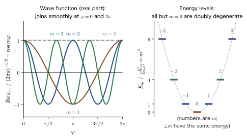
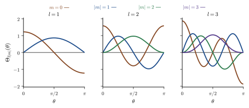

Chapter 21Angular Momentum Operators and Rotational Motion
The electrons in an atom are “going around” the nucleus. This way of putting it is, in fact, not correct as it stands. When we solved the hydrogen atom in the preceding chapters, the states of the electron were distinguished by “orbitals” such as $1\mathrm{s}$, $2\mathrm{p}$, and $3\mathrm{d}$, and the angular part was expressed by functions called spherical harmonics $Y_l^m(\theta,\varphi)$ (Chapter 14, Section 14.5; Chapter 15, Section 15.4). There, $l$ and $m$ appeared as constants that we “put into” the equation in order to obtain solutions. Yet the names of the orbitals s, p, d, and f, the counting of three $\mathrm{p}$ orbitals and five $\mathrm{d}$ orbitals, the splitting of the spectral lines of an atom in a magnetic field, the properties of transition-metal ions as magnets—many of these properties of materials are determined by the fact that $l$ and $m$ express the quantization of the magnitude and the direction of the angular momentum.
In this chapter, we first turn the classical angular momentum $\bm{L}=\bm{r}\times\bm{p}$ (AD 03, Chapter 2, Section 2.5) into the operator $\hat{\bm{L}}$ by replacing the momentum with $\hat{\bm{p}}=-i\hbar\nabla$. Next, we rewrite it in spherical coordinates and check, without skipping any lines, that the derivatives with respect to the radius $r$ disappear and only the derivatives with respect to the angles $\theta,\varphi$ remain. Furthermore, in classical mechanics the three components $L_x,L_y,L_z$ were all determined at the same time, whereas in quantum mechanics $\hat{L}_x,\hat{L}_y,\hat{L}_z$ do not commute with one another and cannot be determined simultaneously; we derive this from the commutation relation of position and momentum $[\hat{x},\hat{p}]=i\hbar$ alone. This is a declaration that in quantum mechanics we can no longer picture an “arrow of the angular momentum vector.”
In the second half, we solve the Schrödinger equation on the two simplest stages of rotational motion—the ring (a particle moving on a circle) and the sphere (a particle moving on the surface of a ball). In the ring problem, $L_z=m\hbar$ ($m$ an integer) follows from the condition that an integer number of waves fit around the circumference. Applying this to the $\pi$ electrons of benzene, we estimate the lowest absorption wavelength to be about $212\ \mathrm{nm}$. The actual absorption of benzene is more complicated than this, but this one-line calculation correctly predicts that it lies deep in the ultraviolet region. In the sphere problem, the associated Legendre equation appears from the angular equation, and $l=0,1,2,\dots$ and $\abs{m}\le l$ follow from the condition that “the solution does not diverge at the two poles.” That the reasons for quantization differ between the ring and the sphere (periodicity, and the finiteness of the wave function at the poles $\theta=0,\pi$) is also a key point of this chapter.
Road map of this part (Part IV) — connections to the previous part
Differences from the previous part. In Part III (Chapters 9–20), we solved the Schrödinger equation for particles in various potentials and found the energy levels and the wave functions. In Part IV, we shift the leading role to a physical quantity other than energy—angular momentum. The angular part of the hydrogen atom is common to every central-force potential, so if we study angular momentum itself here, it can be used in every setting involving atoms, molecules, and solids.
- Chapter 21 (this chapter): We turn angular momentum into an operator, express it in spherical coordinates, and derive the commutation relations. We solve the problems of a particle on a ring and a particle on a sphere.
- Chapter 22 Spherical Harmonics and the Quantization of Angular Momentum: We derive the polar-coordinate form of $\hat{\bm{L}}^2$ and fix the eigenvalues $l(l+1)\hbar^2$ and $m\hbar$ of $\hat{\bm{L}}^2$ and $\hat{L}_z$. The fact that the magnitude of the angular momentum is $\sqrt{l(l+1)}\,\hbar$, and the vector model.
- Chapter 23 Spin: The electron's “other angular momentum,” which orbital motion cannot explain. The Stern–Gerlach experiment and the Pauli matrices.
- Chapter 24 Ladder Operators and the Matrix Representation of Angular Momentum: Starting from the commutation relations alone, we derive the eigenvalues and the matrices of angular momentum algebraically.
- Chapter 25 Addition of Angular Momenta: $\hat{\bm{J}}=\hat{\bm{L}}+\hat{\bm{S}}$ combining orbital and spin angular momenta, and the eigenvalue problem of $\hat{\bm{L}}\cdot\hat{\bm{S}}$.
- Chapter 26 The Physics of Spin–Orbit Interaction and Atoms in a Magnetic Field: Fine structure and the Zeeman effect.
On to the next part. The perturbation theory of Part V (Chapter 27 onward) becomes a tool for treating the spin–orbit interaction and the effects of a magnetic field as “small corrections.” In the ligand field theory of Part VIII (Chapter 43 onward), we examine how the $2l+1=5$-fold degeneracy of $l=2$ (the way of counting degeneracy that appears in Section 21.6 of this chapter) splits in a crystal field.
- Be able to turn the classical angular momentum $\bm{L}=\bm{r}\times\bm{p}$ into the operator $\hat{\bm{L}}=\hat{\bm{r}}\times\hat{\bm{p}}$, and to explain the forms of $\hat{L}_x,\hat{L}_y,\hat{L}_z$ in Cartesian coordinates and their Hermiticity
- Be able to find the spherical-coordinate forms of $\partial/\partial x$, $\partial/\partial y$, and $\partial/\partial z$ from the nabla in spherical coordinates and the transformation matrix of the unit vectors, and to derive $\hat{L}_z=\dfrac{\hbar}{i}\dfrac{\partial}{\partial\varphi}$ and the others without omitting intermediate steps. Be able to verify, by the alternative solution starting from $\hat{\bm{L}}=-i\hbar\,\bm{r}\times\nabla$, that $\hat{\bm{L}}$ acts only on the angles
- Be able to derive the three relations such as $[\hat{L}_x,\hat{L}_y]=i\hbar\hat{L}_z$ from $[\hat{x},\hat{p}]=i\hbar$, and to show that the three components cannot be determined simultaneously and that $\expval{\hat{L}_x}=\expval{\hat{L}_y}=0$ in a state in which $L_z$ is definite
- Be able to solve the Schrödinger equation for a particle on a ring and derive $E=m^2\hbar^2/(2m_{\mathrm{e}}a^2)$, $\psi=e^{im\varphi}/\sqrt{2\pi a}$ ($m\in\mathbb{Z}$), and $\hat{L}_z\psi=m\hbar\psi$. Be able to explain why not only the value of the wave function but also its derivative must be periodic
- Be able to treat the $\pi$ electrons of benzene with the ring model, calculate the lowest absorption wavelength $\lambda=8\pi^2m_{\mathrm{e}}ca^2/(3h)\approx212\ \mathrm{nm}$, and evaluate its relation to the measured values (near $254$, $204$, and $184\ \mathrm{nm}$) in terms of “order of magnitude and trend.” The $4n+2$ rule and an estimate of the level spacing of a quantum ring
- Be able to separate the variables in the Schrödinger equation for a particle on a sphere and to derive the way of setting $\Phi''/\Phi=-m^2$ and $2m_{\mathrm{e}}a^2E/\hbar^2=l(l+1)$, the substitution $x=\cos\theta$, the associated Legendre equation, $l=0,1,2,\dots$ and $\abs{m}\le l$, and $E=\hbar^2l(l+1)/(2m_{\mathrm{e}}a^2)$. Be able to explain that the reasons for quantization differ between the ring and the sphere
Source notes: Yasuhide Mochizuki, “Physics Notes: Quantum Mechanics 2,” pp. 25–29.
21.1 From Classical Angular Momentum to Quantum-Mechanical Operators
21.1.1 Angular momentum in classical mechanics
Consider a point mass of mass $m$ moving about the origin. Let its position vector be $\bm{r}=(x,y,z)$ and its momentum be $\bm{p}=m\bm{v}=(p_x,p_y,p_z)$. Whereas momentum describes the motion of a body moving in a straight line, the quantity that tells us “how vigorously it is circling about the origin” is the angular momentum.
Definition 21.1: Angular momentum (classical mechanics)
The angular momentum of a point mass about the origin is defined as the cross product (vector product; University Mathematics, Chapter 15, Section 15.3) of the position vector and the momentum:
\begin{equation} \bm{L}=\bm{r}\times\bm{p}=\bm{r}\times m\bm{v} =\begin{pmatrix}x\\y\\z\end{pmatrix}\times\begin{pmatrix}p_x\\p_y\\p_z\end{pmatrix} =\begin{pmatrix}y\,p_z-z\,p_y\\ z\,p_x-x\,p_z\\ x\,p_y-y\,p_x\end{pmatrix} \label{eq:21-Lclass} \end{equation}(AD 03, Chapter 2, Section 2.5).
The direction of $\bm{L}$ is perpendicular to both $\bm{r}$ and $\bm{p}$: it is the direction in which a right-handed screw advances when turned from $\bm{r}$ toward $\bm{p}$ (Figure 21.1). Its magnitude is $\abs{\bm{L}}=rp\sin\alpha$, where $\alpha$ is the angle between $\bm{r}$ and $\bm{p}$. For circular motion ($\alpha=90^\circ$), with $r$ the radius of the circle and $v$ the speed, we have $L=mvr$. The dimension is $[\text{mass}][\text{length}]^2[\text{time}]^{-1}$, and the unit is $\mathrm{kg\,m^2\,s^{-1}}=\mathrm{J\,s}$. This is the same dimension as that of the Planck constant $h$ ($\hbar=h/2\pi$). In other words, $\hbar$ serves as the natural “graduation of the yardstick” for angular momentum (Bohr's quantum condition $L=n\hbar$ is the first example; Chapter 5, Section 5.5, Chapter 6, Section 6.4).
Intuition: Why is angular momentum important? — a conserved quantity under a central force
Let us find the time dependence of $\bm{L}$ using the equation of motion $\dd\bm{p}/\dd t=\bm{F}$ of the point mass. By the product rule, we have
$$ \frac{\dd\bm{L}}{\dd t}=\frac{\dd\bm{r}}{\dd t}\times\bm{p}+\bm{r}\times\frac{\dd\bm{p}}{\dd t}=\bm{v}\times m\bm{v}+\bm{r}\times\bm{F}=\bm{r}\times\bm{F} $$(we used $\bm{v}\times\bm{v}=\bm{0}$). The right-hand side $\bm{r}\times\bm{F}$ is the moment of force (torque). If the force is a central force, that is, a force directed toward (or away from) the origin, $\bm{F}\parallel\bm{r}$, then $\bm{r}\times\bm{F}=\bm{0}$ and $\bm{L}$ is constant in time (Introductory University Physics, Chapter 8, Section 8.1; Kepler's second law). The Coulomb force that an electron in an atom feels from the atomic nucleus is a central force, so classically $\bm{L}$ is a constant “conserved quantity.” In quantum mechanics too, the quantities associated with $\hat{\bm{L}}$ ($l$ and $m$) serve, in addition to the energy, as the numbers that distinguish the states of an atom. This is the reason why $l$ and $m$ appeared in the orbitals of the hydrogen atom in Part III.
How to remember the cross product: the criss-cross method
There is a way to remember how to write the three components of Eq. \eqref{eq:21-Lclass} without getting the signs wrong. In the upper row write $x\ \ y\ \ z\ \ x$, and in the lower row $p_x\ \ p_y\ \ p_z\ \ p_x$, repeating the first letter once more at the right end. For each pair of adjacent columns, cross-multiply the upper and lower letters in an × pattern (see the figure below; the product along a solid line is positive, and the product along a dashed line is negative):
The × mark in the columns of $y,z$ gives the $x$ component of $\bm{L}$, the × mark in the columns of $z,x$ gives the $y$ component, and the × mark in the columns of $x,y$ gives the $z$ component. For example, in the × of the columns of $x,y$, the product $x\,p_y$ of “upper left” and “lower right” (descending to the right) is positive, and the product $y\,p_x$ of “upper right” and “lower left” (descending to the left) is negative, so $L_z=x\,p_y-y\,p_x$. The same rule gives $L_x=y\,p_z-z\,p_y$ and $L_y=z\,p_x-x\,p_z$. Repeating $x$ at the right end expresses the fact that after $z$ we return to $x$ (the cyclic order $x\to y\to z\to x$). This cyclic order also appears when we write the commutation relations in Section 21.3.
21.1.2 Replacement by operators
In quantum mechanics, the position $x$ corresponds to the operator $\hat{x}=x$ (“multiply by $x$”), and the momentum $p_x$ corresponds to the differential operator
$$ \hat{p}_x=\frac{\hbar}{i}\frac{\partial}{\partial x}=-i\hbar\frac{\partial}{\partial x},\qquad \hat{p}_y=\frac{\hbar}{i}\frac{\partial}{\partial y},\qquad \hat{p}_z=\frac{\hbar}{i}\frac{\partial}{\partial z} $$(Chapter 9, Section 9.2; $\hbar/i=-i\hbar$ follows from $1/i=-i$). The three components are also written together as $\hat{\bm{p}}=-i\hbar\nabla$. The angular momentum operator is what we obtain by replacing $x,y,z,p_x,p_y,p_z$ in the classical angular momentum, Eq. \eqref{eq:21-Lclass}, by these operators.
Definition 21.2: Angular momentum operator
The angular momentum operator is defined by $\hat{\bm{L}}=\hat{\bm{r}}\times\hat{\bm{p}}=-i\hbar\,\bm{r}\times\nabla$. Its three components are
\begin{equation} \hat{L}_x=\frac{\hbar}{i}\left(y\frac{\partial}{\partial z}-z\frac{\partial}{\partial y}\right),\quad \hat{L}_y=\frac{\hbar}{i}\left(z\frac{\partial}{\partial x}-x\frac{\partial}{\partial z}\right),\quad \hat{L}_z=\frac{\hbar}{i}\left(x\frac{\partial}{\partial y}-y\frac{\partial}{\partial x}\right) \label{eq:21-Lcart} \end{equation}in Cartesian coordinates.
Eq. \eqref{eq:21-Lcart} is obtained simply by substituting $\hat{p}_z=\dfrac{\hbar}{i}\dfrac{\partial}{\partial z}$ and $\hat{p}_y=\dfrac{\hbar}{i}\dfrac{\partial}{\partial y}$ into $L_x=y\,p_z-z\,p_y$ of Eq. \eqref{eq:21-Lclass} (and similarly for the other two). An operator acts on the function written to its right. For example, $\hat{L}_z\,f(x,y,z)=\dfrac{\hbar}{i}\left(x\dfrac{\partial f}{\partial y}-y\dfrac{\partial f}{\partial x}\right)$.
Caution: There is no ambiguity in the order of operator products
In quantum mechanics the order of a product of operators changes the result, as in $\hat{x}\hat{p}_x\ne\hat{p}_x\hat{x}$ (Chapter 8, Section 8.4). In the classical formula $L_x=y\,p_z-z\,p_y$ we have $y\,p_z=p_z\,y$, so one may wonder how to fix the order when converting to operators. However, the products $\hat{y}\,\hat{p}_z$ and $\hat{z}\,\hat{p}_y$ that appear in $\hat{L}_x$ are both products of a position and a momentum of different coordinates. The position and momentum of different coordinates commute ($[\hat{y},\hat{p}_z]=y\dfrac{\partial}{\partial z}-\dfrac{\partial}{\partial z}y=0$, because $y$ does not change when it is differentiated with respect to $z$), so $\hat{y}\hat{p}_z=\hat{p}_z\hat{y}$. Therefore we may replace the quantities in the classical formula by operators as they stand, and no ambiguity arises from the order. (For quantities in which a product of a position and a momentum of the same coordinate, such as $x\,p_x$, appears, for example the radial momentum, this ambiguity becomes a problem.)
Theorem 21.1: $\hat{L}_x,\hat{L}_y,\hat{L}_z$ are Hermitian operators
$\hat{L}_x^\dagger=\hat{L}_x$, $\hat{L}_y^\dagger=\hat{L}_y$, $\hat{L}_z^\dagger=\hat{L}_z$. Therefore, the measured values (eigenvalues) of angular momentum are real (Chapter 8, Section 8.3).
Proof
$\hat{x}$ and $\hat{p}_x$ are Hermitian (Chapter 9, Section 9.6). The Hermitian conjugate of a product reverses the order: $(\hat{A}\hat{B})^\dagger=\hat{B}^\dagger\hat{A}^\dagger$. For $\hat{L}_x=\hat{y}\hat{p}_z-\hat{z}\hat{p}_y$ we have
$$ \hat{L}_x^\dagger=(\hat{y}\hat{p}_z)^\dagger-(\hat{z}\hat{p}_y)^\dagger=\hat{p}_z^\dagger\hat{y}^\dagger-\hat{p}_y^\dagger\hat{z}^\dagger=\hat{p}_z\hat{y}-\hat{p}_y\hat{z}=\hat{y}\hat{p}_z-\hat{z}\hat{p}_y=\hat{L}_x $$In the second-to-last equality, we used the fact that $\hat{p}_z$ and $\hat{y}$, and $\hat{p}_y$ and $\hat{z}$, which belong to different coordinates, commute. The same calculation (with the cyclic permutation of the indices $x\to y\to z\to x$) shows the result for $\hat{L}_y,\hat{L}_z$.
∎
Example 21.1: Magnitude of angular momentum — the electron in the Bohr model and the Earth
(1) Find the angular momentum $L=m_{\mathrm{e}}va_0$ of the ground state of the hydrogen atom in the Bohr model (radius $a_0=5.292\times10^{-11}\ \mathrm{m}$, electron speed $v=2.188\times10^{6}\ \mathrm{m/s}$), and compare it with $\hbar$. (2) Find the angular momentum $L$ of the Earth's orbital revolution (mass $5.972\times10^{24}\ \mathrm{kg}$, orbit radius $1.496\times10^{11}\ \mathrm{m}$, speed $2.978\times10^{4}\ \mathrm{m/s}$), and estimate how many times $\hbar$ it is. Then explain why the fact that the Earth's angular momentum is “discrete in units of $\hbar$” cannot be seen in everyday life.
Solution. (1) Since the motion is circular, $\bm{r}\perp\bm{p}$ and $L=m_{\mathrm{e}}va_0$. Using $m_{\mathrm{e}}=9.109\times10^{-31}\ \mathrm{kg}$, $$ L=9.109\times10^{-31}\times2.188\times10^{6}\times5.292\times10^{-11}\ \mathrm{kg\,m^2/s}=1.055\times10^{-34}\ \mathrm{J\,s} $$ (calculation: $9.109\times2.188=19.93$, $19.93\times5.292=105.5$, and the exponent is $-31+6-11=-36$, so $105.5\times10^{-36}=1.055\times10^{-34}$). Since $\hbar=1.0546\times10^{-34}\ \mathrm{J\,s}$, we have $L=\hbar$ ($L/\hbar=1.000$). This corresponds to $n=1$ in Bohr's quantum condition $L=n\hbar$.
(2) Regarding the motion as circular, we have $L=mvR=5.972\times10^{24}\times2.978\times10^{4}\times1.496\times10^{11}\ \mathrm{J\,s}$. Here $5.972\times2.978=17.78$ and $17.78\times1.496=26.61$, and the exponent is $24+4+11=39$, so $L=2.661\times10^{40}\ \mathrm{J\,s}$. Hence $$ \frac{L}{\hbar}=\frac{2.661\times10^{40}}{1.0546\times10^{-34}}=2.52\times10^{74} $$ Even if the angular momentum is quantized to integer multiples of $\hbar$, the spacing $\hbar$ between adjacent values is only $4\times10^{-75}$ times $L$, so $L$ appears to change continuously. Quantization becomes visible only in microscopic systems (atoms and molecules) in which $L/\hbar$ is of order 1. This is a restatement, in terms of angular momentum, of what we saw in Part II: “because $h$ is small, quantum effects cannot be seen in everyday life.”
Example 21.2: Applying $\hat{L}_z$ in Cartesian coordinates
Apply $\hat{L}_z$ of Eq. \eqref{eq:21-Lcart} to the following functions: (1) $x+iy$, (2) $z$, (3) $(x+iy)^2$, (4) $x$. Which of them are eigenfunctions (those that take the form $\hat{L}_zf=\lambda f$)?
Solution. We have $\hat{L}_z=\dfrac{\hbar}{i}\left(x\dfrac{\partial}{\partial y}-y\dfrac{\partial}{\partial x}\right)$.
(1) For $f=x+iy$, $\dfrac{\partial f}{\partial x}=1$ and $\dfrac{\partial f}{\partial y}=i$. Hence $x\cdot i-y\cdot1=ix-y=i(x+iy)$ (we used $i\cdot iy=-y$). Therefore $\hat{L}_zf=\dfrac{\hbar}{i}\cdot i\,(x+iy)=\hbar\,(x+iy)$. This is an eigenfunction with eigenvalue $+\hbar$.
(2) The function $f=z$ does not contain $x,y$, so $\dfrac{\partial f}{\partial x}=\dfrac{\partial f}{\partial y}=0$ and $\hat{L}_zz=0$. This is an eigenfunction with eigenvalue $0$.
(3) For $f=(x+iy)^2$, $\dfrac{\partial f}{\partial x}=2(x+iy)$ and $\dfrac{\partial f}{\partial y}=2i(x+iy)$. Then $x\cdot2i(x+iy)-y\cdot2(x+iy)=2(x+iy)(ix-y)=2(x+iy)\cdot i(x+iy)=2i\,(x+iy)^2$. Therefore $\hat{L}_zf=\dfrac{\hbar}{i}\cdot2i\,(x+iy)^2=2\hbar\,(x+iy)^2$. This is an eigenfunction with eigenvalue $2\hbar$.
(4) For $f=x$, $\dfrac{\partial f}{\partial x}=1$ and $\dfrac{\partial f}{\partial y}=0$. Then $\hat{L}_zx=\dfrac{\hbar}{i}(-y)=i\hbar\,y$. This is not a constant multiple of $x$, so it is not an eigenfunction. Similarly, $\hat{L}_zy=\dfrac{\hbar}{i}x=-i\hbar\,x$.
To summarize the results, $x+iy$, $z$, and $(x+iy)^2$ are eigenfunctions with eigenvalues $\hbar$, $0$, and $2\hbar$, respectively. The eigenvalue $-\hbar$ corresponds to $x-iy$ ($\hat{L}_z(x-iy)=\dfrac{\hbar}{i}(x\cdot(-i)-y)=\dfrac{\hbar}{i}(-i)(x-iy)=-\hbar(x-iy)$). In spherical coordinates $x\pm iy=r\sin\theta\,e^{\pm i\varphi}$, so these correspond to $m=\pm1$ of the $\mathrm{p}$ orbitals with $l=1$ ($Y_1^{\pm1}\propto\sin\theta\,e^{\pm i\varphi}$, Table 14.1 in Chapter 14), $z\propto\cos\theta$ corresponds to $m=0$, and $(x+iy)^2$ is proportional to the angular part of the $\mathrm{d}$ orbital with $l=2$, $m=2$. The real orbitals $x$ and $y$ are not eigenfunctions of $\hat{L}_z$; they are superpositions of $m=+1$ and $m=-1$ ($x=\tfrac12\left[(x+iy)+(x-iy)\right]$).
21.2 Angular Momentum Operators in Spherical Coordinates
An atom is nearly spherically symmetric, and the potential is determined only by the distance $r$ from the origin. We therefore want to rewrite the angular momentum operator of Eq. \eqref{eq:21-Lcart} in spherical coordinates $(r,\theta,\varphi)$. Then the expressions become surprisingly simple; for example, $\hat{L}_z$ becomes just the single term $\dfrac{\partial}{\partial\varphi}$. In this section we carry out the calculation without skipping any steps.
21.2.1 Spherical coordinates and the three unit vectors
Spherical coordinates $(r,\theta,\varphi)$ specify a point by the distance $r$ from the origin, the angle from the $z$ axis (the polar angle) $\theta$ ($0\le\theta\le\pi$), and the azimuthal angle $\varphi$ measured from the $x$ axis ($0\le\varphi\lt2\pi$) (Figure 21.2). The relation to Cartesian coordinates is
\begin{equation} x=r\sin\theta\cos\varphi,\qquad y=r\sin\theta\sin\varphi,\qquad z=r\cos\theta \label{eq:21-xyz} \end{equation}(see University Mathematics, Chapter 16, Section 16.3). In this book we write the azimuthal angle as $\varphi$, to distinguish it from the symbol $\phi$ used for wave functions and orbitals.
Differentiating the position vector $\bm{r}=(r\sin\theta\cos\varphi,\ r\sin\theta\sin\varphi,\ r\cos\theta)$ of the point P while changing only one of $r,\theta,\varphi$ gives the direction in which that coordinate increases:
$$ \frac{\partial\bm{r}}{\partial r}=\begin{pmatrix}\sin\theta\cos\varphi\\ \sin\theta\sin\varphi\\ \cos\theta\end{pmatrix},\quad \frac{\partial\bm{r}}{\partial\theta}=r\begin{pmatrix}\cos\theta\cos\varphi\\ \cos\theta\sin\varphi\\ -\sin\theta\end{pmatrix},\quad \frac{\partial\bm{r}}{\partial\varphi}=r\sin\theta\begin{pmatrix}-\sin\varphi\\ \cos\varphi\\ 0\end{pmatrix} $$The lengths of the three vectors are $1,\ r,\ r\sin\theta$ (for example, the second is $r\sqrt{\cos^2\theta(\cos^2\varphi+\sin^2\varphi)+\sin^2\theta}=r$). The vectors rescaled to length 1 are the unit vectors of spherical coordinates:
\begin{equation} \bm{e}_r=\begin{pmatrix}\sin\theta\cos\varphi\\ \sin\theta\sin\varphi\\ \cos\theta\end{pmatrix},\quad \bm{e}_\theta=\begin{pmatrix}\cos\theta\cos\varphi\\ \cos\theta\sin\varphi\\ -\sin\theta\end{pmatrix},\quad \bm{e}_\varphi=\begin{pmatrix}-\sin\varphi\\ \cos\varphi\\ 0\end{pmatrix} \label{eq:21-eunit} \end{equation}These are mutually orthogonal, and $\bm{e}_r\times\bm{e}_\theta=\bm{e}_\varphi$, $\bm{e}_\theta\times\bm{e}_\varphi=\bm{e}_r$, and $\bm{e}_\varphi\times\bm{e}_r=\bm{e}_\theta$ hold (for example, the $z$ component of $\bm{e}_r\times\bm{e}_\varphi$ is $\sin\theta\cos\varphi\cdot\cos\varphi-\sin\theta\sin\varphi\cdot(-\sin\varphi)=\sin\theta$, which agrees with the $z$ component $+\sin\theta$ of $-\bm{e}_\theta$). Note also that, unlike the Cartesian unit vectors $\bm{e}_x,\bm{e}_y,\bm{e}_z$, the directions of $\bm{e}_r,\bm{e}_\theta,\bm{e}_\varphi$ change with the position of the point P.
21.2.2 The transformation matrix of the unit vectors
Let us expand $\bm{e}_x$ in the unit vectors of spherical coordinates. Since $\bm{e}_r,\bm{e}_\theta,\bm{e}_\varphi$ are orthonormal, $\bm{e}_x=(\bm{e}_x\cdot\bm{e}_r)\,\bm{e}_r+(\bm{e}_x\cdot\bm{e}_\theta)\,\bm{e}_\theta+(\bm{e}_x\cdot\bm{e}_\varphi)\,\bm{e}_\varphi$. Reading off the first components of Eq. \eqref{eq:21-eunit}, we find $\bm{e}_x\cdot\bm{e}_r=\sin\theta\cos\varphi$, $\bm{e}_x\cdot\bm{e}_\theta=\cos\theta\cos\varphi$, and $\bm{e}_x\cdot\bm{e}_\varphi=-\sin\varphi$. For $\bm{e}_y,\bm{e}_z$ we likewise need only read off the second and third components. Writing the three together as a matrix, we get
\begin{equation} \begin{pmatrix}\bm{e}_x\\ \bm{e}_y\\ \bm{e}_z\end{pmatrix} =\underbrace{\begin{pmatrix} \sin\theta\cos\varphi & \cos\theta\cos\varphi & -\sin\varphi\\ \sin\theta\sin\varphi & \cos\theta\sin\varphi & \cos\varphi\\ \cos\theta & -\sin\theta & 0 \end{pmatrix}}_{\displaystyle M} \begin{pmatrix}\bm{e}_r\\ \bm{e}_\theta\\ \bm{e}_\varphi\end{pmatrix} \label{eq:21-emat} \end{equation}The $i$th row of the matrix $M$ gives the components of the Cartesian unit vector $\bm{e}_i$ in the spherical-coordinate basis. The three columns of $M$ are the three vectors of Eq. \eqref{eq:21-eunit} themselves (the $x,y,z$ components of $\bm{e}_r,\bm{e}_\theta,\bm{e}_\varphi$), and since they are mutually orthogonal unit vectors, $M$ is an orthogonal matrix ($M^{\mathsf T}M=1$, $M^{-1}=M^{\mathsf T}$) (see University Mathematics, Chapter 16, Section 16.4).
21.2.3 Nabla in spherical coordinates
Nabla $\nabla$ is the operator that, acting on a function $f$, gives the vector $\nabla f$ (the gradient), which points in the direction in which $f$ increases most. Its form in spherical coordinates can be derived as follows. When each coordinate is changed by $\dd r,\dd\theta,\dd\varphi$, the displacement vector that shifts the point P by a small amount is $\dd\bm{r}=\bm{e}_r\,\dd r+\bm{e}_\theta\,r\dd\theta+\bm{e}_\varphi\,r\sin\theta\,\dd\varphi$ (using the three lengths $1,r,r\sin\theta$ found above). On the other hand, the change of $f$ is $\dd f=\dfrac{\partial f}{\partial r}\dd r+\dfrac{\partial f}{\partial\theta}\dd\theta+\dfrac{\partial f}{\partial\varphi}\dd\varphi$, which equals $\nabla f\cdot\dd\bm{r}$. Letting $\nabla f=a\,\bm{e}_r+b\,\bm{e}_\theta+c\,\bm{e}_\varphi$, we have $\nabla f\cdot\dd\bm{r}=a\,\dd r+b\,r\dd\theta+c\,r\sin\theta\,\dd\varphi$, so comparing coefficients gives $a=\dfrac{\partial f}{\partial r}$, $b=\dfrac1r\dfrac{\partial f}{\partial\theta}$, and $c=\dfrac{1}{r\sin\theta}\dfrac{\partial f}{\partial\varphi}$. That is,
\begin{equation} \nabla=\bm{e}_r\frac{\partial}{\partial r}+\bm{e}_\theta\frac1r\frac{\partial}{\partial\theta}+\bm{e}_\varphi\frac{1}{r\sin\theta}\frac{\partial}{\partial\varphi} \label{eq:21-nabla} \end{equation}(see University Mathematics, Chapter 16, Section 16.5). The factors $1/r$ and $1/(r\sin\theta)$ appear when we differentiate with respect to an angle because the actual distance moved when the angle changes by $\dd\theta$ is $r\dd\theta$, and when it changes by $\dd\varphi$ it is $r\sin\theta\,\dd\varphi$ (motion in the $\varphi$ direction is along a circle whose radius is the distance $r\sin\theta$ from the $z$ axis).
21.2.4 The spherical-coordinate form of $\partial/\partial x$, $\partial/\partial y$, and $\partial/\partial z$
In terms of the Cartesian unit vectors, nabla can be written $\nabla=\bm{e}_x\dfrac{\partial}{\partial x}+\bm{e}_y\dfrac{\partial}{\partial y}+\bm{e}_z\dfrac{\partial}{\partial z}$. Eq. \eqref{eq:21-nabla} is the same vector $\nabla$ written in terms of the unit vectors of spherical coordinates. Let us find the Cartesian components $\dfrac{\partial}{\partial x_i}=\bm{e}_i\cdot\nabla$ ($x_1,x_2,x_3=x,y,z$) from Eq. \eqref{eq:21-nabla}. We write Eq. \eqref{eq:21-nabla} as $\nabla=\sum_j\bm{e}^{\mathrm{s}}_j\,\nabla^{\mathrm{s}}_j$ ($\bm{e}^{\mathrm{s}}_j$ stands for $\bm{e}_r,\bm{e}_\theta,\bm{e}_\varphi$, and $\nabla^{\mathrm{s}}_j$ for $\dfrac{\partial}{\partial r},\ \dfrac1r\dfrac{\partial}{\partial\theta},\ \dfrac{1}{r\sin\theta}\dfrac{\partial}{\partial\varphi}$). Since the inner product $\bm{e}_i\cdot\bm{e}^{\mathrm{s}}_j$ is the $(i,j)$ element $M_{ij}$ of the matrix $M$, we have $\dfrac{\partial}{\partial x_i}=\sum_jM_{ij}\nabla^{\mathrm{s}}_j$. That is, we need only multiply the components of $\nabla$ in spherical coordinates by the same matrix $M$ as in the transformation of the basis vectors, Eq. \eqref{eq:21-emat}. Explicitly,
\begin{equation} \begin{pmatrix}\dfrac{\partial}{\partial x}\\[2mm] \dfrac{\partial}{\partial y}\\[2mm] \dfrac{\partial}{\partial z}\end{pmatrix} =\begin{pmatrix} \sin\theta\cos\varphi & \cos\theta\cos\varphi & -\sin\varphi\\ \sin\theta\sin\varphi & \cos\theta\sin\varphi & \cos\varphi\\ \cos\theta & -\sin\theta & 0 \end{pmatrix} \begin{pmatrix}\dfrac{\partial}{\partial r}\\[2mm] \dfrac1r\dfrac{\partial}{\partial\theta}\\[2mm] \dfrac{1}{r\sin\theta}\dfrac{\partial}{\partial\varphi}\end{pmatrix} \label{eq:21-dmat} \end{equation}Carrying out the matrix product, this splits into three equations:
\begin{equation} \begin{aligned} \frac{\partial}{\partial x}&=\sin\theta\cos\varphi\,\frac{\partial}{\partial r}+\frac{\cos\theta\cos\varphi}{r}\frac{\partial}{\partial\theta}-\frac{\sin\varphi}{r\sin\theta}\frac{\partial}{\partial\varphi}\\ \frac{\partial}{\partial y}&=\sin\theta\sin\varphi\,\frac{\partial}{\partial r}+\frac{\cos\theta\sin\varphi}{r}\frac{\partial}{\partial\theta}+\frac{\cos\varphi}{r\sin\theta}\frac{\partial}{\partial\varphi}\\ \frac{\partial}{\partial z}&=\cos\theta\,\frac{\partial}{\partial r}-\frac{\sin\theta}{r}\frac{\partial}{\partial\theta} \end{aligned} \label{eq:21-dxyz} \end{equation}(In the third equation, the last component of the third row $(\cos\theta,-\sin\theta,0)$ of the matrix is $0$, so no $\varphi$ derivative appears. This is because $z$ does not change under a rotation about the $z$ axis.)
21.2.5 Spherical-coordinate form of $\hat{L}_x,\hat{L}_y,\hat{L}_z$
Into Eq. \eqref{eq:21-Lcart} we substitute $x=r\sin\theta\cos\varphi$, $y=r\sin\theta\sin\varphi$, $z=r\cos\theta$ and Eq. \eqref{eq:21-dxyz}. We begin with the simplest one, $\hat{L}_z$.
Derivation: Spherical-coordinate form of $\hat{L}_z$
We compute the inside of the parentheses in $\hat{L}_z=\dfrac{\hbar}{i}\left(x\dfrac{\partial}{\partial y}-y\dfrac{\partial}{\partial x}\right)$ term by term.
$$ \begin{aligned} x\frac{\partial}{\partial y}&=r\sin\theta\cos\varphi\left[\sin\theta\sin\varphi\frac{\partial}{\partial r}+\frac{\cos\theta\sin\varphi}{r}\frac{\partial}{\partial\theta}+\frac{\cos\varphi}{r\sin\theta}\frac{\partial}{\partial\varphi}\right]\\ &=r\sin^2\theta\sin\varphi\cos\varphi\frac{\partial}{\partial r}+\sin\theta\cos\theta\sin\varphi\cos\varphi\frac{\partial}{\partial\theta}+\cos^2\varphi\frac{\partial}{\partial\varphi},\\[2mm] y\frac{\partial}{\partial x}&=r\sin\theta\sin\varphi\left[\sin\theta\cos\varphi\frac{\partial}{\partial r}+\frac{\cos\theta\cos\varphi}{r}\frac{\partial}{\partial\theta}-\frac{\sin\varphi}{r\sin\theta}\frac{\partial}{\partial\varphi}\right]\\ &=r\sin^2\theta\sin\varphi\cos\varphi\frac{\partial}{\partial r}+\sin\theta\cos\theta\sin\varphi\cos\varphi\frac{\partial}{\partial\theta}-\sin^2\varphi\frac{\partial}{\partial\varphi} \end{aligned} $$When we take the difference, the $\dfrac{\partial}{\partial r}$ term and the $\dfrac{\partial}{\partial\theta}$ term are the same in both expressions and so cancel each other, and all that remains is $(\cos^2\varphi+\sin^2\varphi)\dfrac{\partial}{\partial\varphi}=\dfrac{\partial}{\partial\varphi}$. Hence we obtain $\hat{L}_z=\dfrac{\hbar}{i}\dfrac{\partial}{\partial\varphi}$.
∎
Derivation: Spherical-coordinate form of $\hat{L}_x$
We compute the inside of the parentheses in $\hat{L}_x=\dfrac{\hbar}{i}\left(y\dfrac{\partial}{\partial z}-z\dfrac{\partial}{\partial y}\right)$ term by term.
$$ \begin{aligned} y\frac{\partial}{\partial z}&=r\sin\theta\sin\varphi\left[\cos\theta\frac{\partial}{\partial r}-\frac{\sin\theta}{r}\frac{\partial}{\partial\theta}\right] =r\sin\theta\cos\theta\sin\varphi\frac{\partial}{\partial r}-\sin^2\theta\sin\varphi\frac{\partial}{\partial\theta},\\[2mm] z\frac{\partial}{\partial y}&=r\cos\theta\left[\sin\theta\sin\varphi\frac{\partial}{\partial r}+\frac{\cos\theta\sin\varphi}{r}\frac{\partial}{\partial\theta}+\frac{\cos\varphi}{r\sin\theta}\frac{\partial}{\partial\varphi}\right]\\ &=r\sin\theta\cos\theta\sin\varphi\frac{\partial}{\partial r}+\cos^2\theta\sin\varphi\frac{\partial}{\partial\theta}+\frac{\cos\theta\cos\varphi}{\sin\theta}\frac{\partial}{\partial\varphi} \end{aligned} $$When we take the difference, the $\dfrac{\partial}{\partial r}$ terms cancel each other, the coefficient of $\dfrac{\partial}{\partial\theta}$ is $-(\sin^2\theta+\cos^2\theta)\sin\varphi=-\sin\varphi$, and the coefficient of $\dfrac{\partial}{\partial\varphi}$ is $-\dfrac{\cos\theta}{\sin\theta}\cos\varphi=-\dfrac{\cos\varphi}{\tan\theta}$:
$$ y\frac{\partial}{\partial z}-z\frac{\partial}{\partial y}=-\sin\varphi\frac{\partial}{\partial\theta}-\frac{\cos\varphi}{\tan\theta}\frac{\partial}{\partial\varphi} $$Hence $\hat{L}_x=-\dfrac{\hbar}{i}\left(\sin\varphi\dfrac{\partial}{\partial\theta}+\dfrac{\cos\varphi}{\tan\theta}\dfrac{\partial}{\partial\varphi}\right)$.
∎
Derivation: Spherical-coordinate form of $\hat{L}_y$
We compute the inside of the parentheses in $\hat{L}_y=\dfrac{\hbar}{i}\left(z\dfrac{\partial}{\partial x}-x\dfrac{\partial}{\partial z}\right)$ term by term.
$$ \begin{aligned} z\frac{\partial}{\partial x}&=r\cos\theta\left[\sin\theta\cos\varphi\frac{\partial}{\partial r}+\frac{\cos\theta\cos\varphi}{r}\frac{\partial}{\partial\theta}-\frac{\sin\varphi}{r\sin\theta}\frac{\partial}{\partial\varphi}\right]\\ &=r\sin\theta\cos\theta\cos\varphi\frac{\partial}{\partial r}+\cos^2\theta\cos\varphi\frac{\partial}{\partial\theta}-\frac{\cos\theta\sin\varphi}{\sin\theta}\frac{\partial}{\partial\varphi},\\[2mm] x\frac{\partial}{\partial z}&=r\sin\theta\cos\varphi\left[\cos\theta\frac{\partial}{\partial r}-\frac{\sin\theta}{r}\frac{\partial}{\partial\theta}\right] =r\sin\theta\cos\theta\cos\varphi\frac{\partial}{\partial r}-\sin^2\theta\cos\varphi\frac{\partial}{\partial\theta} \end{aligned} $$When we take the difference, the $\dfrac{\partial}{\partial r}$ terms cancel each other, the coefficient of $\dfrac{\partial}{\partial\theta}$ is $(\cos^2\theta+\sin^2\theta)\cos\varphi=\cos\varphi$, and the coefficient of $\dfrac{\partial}{\partial\varphi}$ is $-\dfrac{\sin\varphi}{\tan\theta}$. Hence $\hat{L}_y=\dfrac{\hbar}{i}\left(\cos\varphi\dfrac{\partial}{\partial\theta}-\dfrac{\sin\varphi}{\tan\theta}\dfrac{\partial}{\partial\varphi}\right)=-\dfrac{\hbar}{i}\left(-\cos\varphi\dfrac{\partial}{\partial\theta}+\dfrac{\sin\varphi}{\tan\theta}\dfrac{\partial}{\partial\varphi}\right)$.
∎
Formula 21.1: Spherical-coordinate form of the angular momentum operators
\begin{equation} \begin{aligned} \hat{L}_x&=-\frac{\hbar}{i}\left(\sin\varphi\frac{\partial}{\partial\theta}+\frac{\cos\varphi}{\tan\theta}\frac{\partial}{\partial\varphi}\right)=i\hbar\left(\sin\varphi\frac{\partial}{\partial\theta}+\cot\theta\cos\varphi\frac{\partial}{\partial\varphi}\right),\\ \hat{L}_y&=-\frac{\hbar}{i}\left(-\cos\varphi\frac{\partial}{\partial\theta}+\frac{\sin\varphi}{\tan\theta}\frac{\partial}{\partial\varphi}\right)=i\hbar\left(-\cos\varphi\frac{\partial}{\partial\theta}+\cot\theta\sin\varphi\frac{\partial}{\partial\varphi}\right),\\ \hat{L}_z&=\frac{\hbar}{i}\frac{\partial}{\partial\varphi}=-i\hbar\frac{\partial}{\partial\varphi} \end{aligned} \label{eq:21-Lsph} \end{equation}($-\hbar/i=i\hbar$. $\cot\theta=1/\tan\theta$.) The derivative $\partial/\partial r$ appears in none of the components.
That $\partial/\partial r$ does not appear is no accident: it is a consequence of the fact that $\bm{L}=\bm{r}\times\bm{p}$ picks up only the “momentum in the direction perpendicular to $\bm{r}$” (see the next subsection). This is an important property. $\hat{\bm{L}}$ acts only on the angles $\theta,\varphi$ and does not act on the radial coordinate $r$. Therefore every component acting on a function $F(r)$ of $r$ only gives $0$, and the angular momentum of an s state ($l=0$) is $0$ (Exercise 21.5).
21.2.6 Alternative solution: From $\hat{\bm{L}}=-i\hbar\,\bm{r}\times\nabla$
If we compute $\hat{\bm{L}}$ while keeping the vector operations, the answer comes out without going through the calculation of the components. From $\bm{r}=r\,\bm{e}_r$ and Eq. \eqref{eq:21-nabla},
$$ \bm{r}\times\nabla=r\,\bm{e}_r\times\left(\bm{e}_r\frac{\partial}{\partial r}+\bm{e}_\theta\frac1r\frac{\partial}{\partial\theta}+\bm{e}_\varphi\frac{1}{r\sin\theta}\frac{\partial}{\partial\varphi}\right) =(\bm{e}_r\times\bm{e}_r)\,r\frac{\partial}{\partial r}+(\bm{e}_r\times\bm{e}_\theta)\frac{\partial}{\partial\theta}+(\bm{e}_r\times\bm{e}_\varphi)\frac{1}{\sin\theta}\frac{\partial}{\partial\varphi} $$Since $\bm{e}_r\times\bm{e}_r=\bm{0}$, $\bm{e}_r\times\bm{e}_\theta=\bm{e}_\varphi$, and $\bm{e}_r\times\bm{e}_\varphi=-\bm{e}_\theta$,
\begin{equation} \hat{\bm{L}}=-i\hbar\,\bm{r}\times\nabla=-i\hbar\left(\bm{e}_\varphi\frac{\partial}{\partial\theta}-\bm{e}_\theta\frac{1}{\sin\theta}\frac{\partial}{\partial\varphi}\right) \label{eq:21-Lvec} \end{equation}follows. The $\partial/\partial r$ term vanishes because of $\bm{e}_r\times\bm{e}_r=\bm{0}$. In other words, $\hat{\bm{L}}$ has no component at all in the $\bm{e}_r$ direction and has components only in the $\bm{e}_\theta$ and $\bm{e}_\varphi$ directions (consistent with the fact that $\bm{L}=\bm{r}\times\bm{p}$ is perpendicular to $\bm{r}$). Each component is obtained from Eq. \eqref{eq:21-Lvec} and the inner products read off from the matrix $M$ of Eq. \eqref{eq:21-emat}: $\bm{e}_x\cdot\bm{e}_\theta=\cos\theta\cos\varphi$, $\bm{e}_x\cdot\bm{e}_\varphi=-\sin\varphi$, $\bm{e}_y\cdot\bm{e}_\theta=\cos\theta\sin\varphi$, $\bm{e}_y\cdot\bm{e}_\varphi=\cos\varphi$, $\bm{e}_z\cdot\bm{e}_\theta=-\sin\theta$, $\bm{e}_z\cdot\bm{e}_\varphi=0$:
$$ \begin{aligned} \hat{L}_x&=\bm{e}_x\cdot\hat{\bm{L}}=-i\hbar\left[(-\sin\varphi)\frac{\partial}{\partial\theta}-\frac{\cos\theta\cos\varphi}{\sin\theta}\frac{\partial}{\partial\varphi}\right]=i\hbar\left(\sin\varphi\frac{\partial}{\partial\theta}+\frac{\cos\varphi}{\tan\theta}\frac{\partial}{\partial\varphi}\right),\\ \hat{L}_y&=\bm{e}_y\cdot\hat{\bm{L}}=-i\hbar\left[\cos\varphi\frac{\partial}{\partial\theta}-\frac{\cos\theta\sin\varphi}{\sin\theta}\frac{\partial}{\partial\varphi}\right]=i\hbar\left(-\cos\varphi\frac{\partial}{\partial\theta}+\frac{\sin\varphi}{\tan\theta}\frac{\partial}{\partial\varphi}\right),\\ \hat{L}_z&=\bm{e}_z\cdot\hat{\bm{L}}=-i\hbar\left[0\cdot\frac{\partial}{\partial\theta}-\frac{(-\sin\theta)}{\sin\theta}\frac{\partial}{\partial\varphi}\right]=-i\hbar\frac{\partial}{\partial\varphi} \end{aligned} $$which agrees with Eq. \eqref{eq:21-Lsph}. That the same result came out in two ways also serves as a check of the calculation.
Intuition: $\hat{L}_z=\dfrac{\hbar}{i}\dfrac{\partial}{\partial\varphi}$ generates “rotation about the $z$ axis”
If we rotate the shape of a function $f(r,\theta,\varphi)$ about the $z$ axis by an angle $\delta$ (counterclockwise), the new function is $f(r,\theta,\varphi-\delta)$, the original function with its values shifted by $-\delta$ in the $\varphi$ direction. When $\delta$ is small, a Taylor expansion gives
$$ f(r,\theta,\varphi-\delta)\approx f-\delta\frac{\partial f}{\partial\varphi}=\left(1-\frac{i}{\hbar}\,\delta\,\hat{L}_z\right)f $$(where $\dfrac{\partial}{\partial\varphi}=\dfrac{i}{\hbar}\hat{L}_z$ was used). That is, an infinitesimal rotation is represented by $1-\dfrac{i}{\hbar}\delta\hat{L}_z$, and $\hat{L}_z$ is the “operator that generates rotation about the $z$ axis” (the generator). In Cartesian coordinates the same thing can be written with $x\dfrac{\partial}{\partial y}-y\dfrac{\partial}{\partial x}$ (the rotation changes $(x,y)\to(x+\delta y,\ y-\delta x)$, so $f(x+\delta y,y-\delta x)\approx f-\delta\left(x\dfrac{\partial f}{\partial y}-y\dfrac{\partial f}{\partial x}\right)$). A rotation by a finite angle $\delta$ is $e^{-i\delta\hat{L}_z/\hbar}$, and when it acts on the eigenfunction $e^{im\varphi}$ of $\hat{L}_z$, it merely multiplies it by the phase $e^{-im\delta}$. This forms a pair with the fact that the momentum $\hat{p}$ is the “generator of translations” ($e^{-ia\hat{p}/\hbar}$ is a translation). This viewpoint is used in earnest from Chapter 24 onward and in group theory (Chapter 45).
Example 21.3: Checking the polar-coordinate form
Apply $\hat{L}_x$ to $f=z$ using both the Cartesian form \eqref{eq:21-Lcart} and the spherical-coordinate form \eqref{eq:21-Lsph}, and check that the results agree. Similarly, apply $\hat{L}_z$ to $f=x$ and check.
Solution. Cartesian form: when $\hat{L}_x=\dfrac{\hbar}{i}\left(y\dfrac{\partial}{\partial z}-z\dfrac{\partial}{\partial y}\right)$ acts on $f=z$, we have $\dfrac{\partial z}{\partial z}=1$ and $\dfrac{\partial z}{\partial y}=0$, so $\hat{L}_xz=\dfrac{\hbar}{i}\,y=-i\hbar\,y$.
Spherical-coordinate form: since $z=r\cos\theta$, $\dfrac{\partial z}{\partial\theta}=-r\sin\theta$ and $\dfrac{\partial z}{\partial\varphi}=0$. From $\hat{L}_x=i\hbar\left(\sin\varphi\dfrac{\partial}{\partial\theta}+\dfrac{\cos\varphi}{\tan\theta}\dfrac{\partial}{\partial\varphi}\right)$ we get $\hat{L}_xz=i\hbar\sin\varphi\cdot(-r\sin\theta)=-i\hbar\,r\sin\theta\sin\varphi=-i\hbar\,y$. The two agree.
$\hat{L}_z$ applied to $f=x$: in the Cartesian form, $\hat{L}_zx=\dfrac{\hbar}{i}\left(x\cdot0-y\cdot1\right)=-\dfrac{\hbar}{i}y=i\hbar\,y$. In the spherical-coordinate form, $x=r\sin\theta\cos\varphi$ and $\dfrac{\partial x}{\partial\varphi}=-r\sin\theta\sin\varphi=-y$, so $\hat{L}_zx=\dfrac{\hbar}{i}(-y)=i\hbar\,y$. They agree (we used $\dfrac{1}{i}=-i$).
Furthermore, when $\hat{L}_y$ acts on $f=z$, the Cartesian form gives $\dfrac{\hbar}{i}\left(z\dfrac{\partial z}{\partial x}-x\dfrac{\partial z}{\partial z}\right)=-\dfrac{\hbar}{i}x=i\hbar\,x$, and the spherical-coordinate form gives $i\hbar\left(-\cos\varphi\right)(-r\sin\theta)=i\hbar\,r\sin\theta\cos\varphi=i\hbar\,x$, so again they agree. These results are also consistent with the vector form \eqref{eq:21-Lvec} and the inner products such as $\bm{e}_z\cdot\bm{e}_\theta=-\sin\theta$.
21.3 Commutation Relations of Angular Momentum and the Fact That Components “Cannot Be Determined Simultaneously”
In classical mechanics, all three components of the angular momentum vector $\bm{L}$ have values at the same instant. We can state the orientation of a planet's orbital plane and the magnitude of its angular momentum simultaneously, with as much accuracy as we like. In quantum mechanics this is not so. $\hat{L}_x,\hat{L}_y,\hat{L}_z$ do not commute with one another. This fact lies at the root of experiments (the Stern–Gerlach experiment, Chapter 23) and of the structure of atomic spectra. Here we derive it from the commutation relations of position and momentum alone.
21.3.1 Starting point: The fundamental commutation relations of position and momentum
The starting point is the second principle of quantum mechanics (Axiom 8.4). In three dimensions, for the position $\hat{x}_i$ ($\hat{x}_1,\hat{x}_2,\hat{x}_3=\hat{x},\hat{y},\hat{z}$) and the momentum $\hat{p}_j$ ($\hat{p}_1,\hat{p}_2,\hat{p}_3=\hat{p}_x,\hat{p}_y,\hat{p}_z$), we have
\begin{equation} \comm{\hat{x}_i}{\hat{p}_j}=i\hbar\,\delta_{ij},\qquad\comm{\hat{x}_i}{\hat{x}_j}=0,\qquad\comm{\hat{p}_i}{\hat{p}_j}=0 \label{eq:21-basic} \end{equation}where $\delta_{ij}$ is the Kronecker delta, which equals $1$ when $i=j$ and $0$ when $i\ne j$. In other words, only the position and momentum of the same coordinate ($\hat{x}$ and $\hat{p}_x$, $\hat{y}$ and $\hat{p}_y$, $\hat{z}$ and $\hat{p}_z$) fail to commute, and every other pair commutes. For example, $\comm{\hat{y}}{\hat{p}_z}=0$ and $\comm{\hat{p}_x}{\hat{p}_y}=0$ (the result is the same even when the order of partial differentiation is interchanged). Combining this with the commutator formulas (item (iii) of Formula 8.1: $\comm{\hat{A}}{\hat{B}\hat{C}}=\comm{\hat{A}}{\hat{B}}\hat{C}+\hat{B}\comm{\hat{A}}{\hat{C}}$, $\comm{\hat{A}\hat{B}}{\hat{C}}=\hat{A}\comm{\hat{B}}{\hat{C}}+\comm{\hat{A}}{\hat{C}}\hat{B}$), we can compute the commutator of a product of position and momentum operators. In the following derivation, we compute the commutator of products containing only one non-commuting pair by going back to the definition $\comm{\hat{A}}{\hat{B}}=\hat{A}\hat{B}-\hat{B}\hat{A}$, line by line.
21.3.2 Derivation of $\comm{\hat{L}_x}{\hat{L}_y}=i\hbar\hat{L}_z$
Derivation: $\comm{\hat{L}_x}{\hat{L}_y}$
Substitute $\hat{L}_x=\hat{y}\hat{p}_z-\hat{z}\hat{p}_y$ and $\hat{L}_y=\hat{z}\hat{p}_x-\hat{x}\hat{p}_z$, and split into four terms using the linearity of the commutator (Formula 8.1 (ii)):
$$ \comm{\hat{L}_x}{\hat{L}_y}=\comm{\hat{y}\hat{p}_z-\hat{z}\hat{p}_y}{\hat{z}\hat{p}_x-\hat{x}\hat{p}_z} =\underbrace{\comm{\hat{y}\hat{p}_z}{\hat{z}\hat{p}_x}}_{\text{(i)}}-\underbrace{\comm{\hat{y}\hat{p}_z}{\hat{x}\hat{p}_z}}_{\text{(ii)}}-\underbrace{\comm{\hat{z}\hat{p}_y}{\hat{z}\hat{p}_x}}_{\text{(iii)}}+\underbrace{\comm{\hat{z}\hat{p}_y}{\hat{x}\hat{p}_z}}_{\text{(iv)}} $$We compute each term by going back to the definition $\comm{\hat{A}}{\hat{B}}=\hat{A}\hat{B}-\hat{B}\hat{A}$. By the fundamental commutation relations in Eq. \eqref{eq:21-basic}, the only non-commuting pair is $\hat{z}$ and $\hat{p}_z$, and the order of all the other factors can be interchanged freely.
(i) $\hat{y}\hat{p}_z\cdot\hat{z}\hat{p}_x-\hat{z}\hat{p}_x\cdot\hat{y}\hat{p}_z$. Since $\hat{y}$ and $\hat{p}_x$ commute with all the other factors, we can bring them to the front, which gives $\hat{y}\hat{p}_x\left(\hat{p}_z\hat{z}-\hat{z}\hat{p}_z\right)=\hat{y}\hat{p}_x\comm{\hat{p}_z}{\hat{z}}=\hat{y}\hat{p}_x\cdot(-i\hbar)=-i\hbar\,\hat{y}\hat{p}_x$ (here $\comm{\hat{p}_z}{\hat{z}}=-\comm{\hat{z}}{\hat{p}_z}=-i\hbar$).
(ii) $\hat{y}\hat{p}_z\hat{x}\hat{p}_z-\hat{x}\hat{p}_z\hat{y}\hat{p}_z$. There is no $\hat{z}$ here, and $\hat{y},\hat{p}_z,\hat{x},\hat{p}_z$ all commute with one another, so the two products are equal and the difference is $0$.
(iii) $\hat{z}\hat{p}_y\hat{z}\hat{p}_x-\hat{z}\hat{p}_x\hat{z}\hat{p}_y$. There is no $\hat{p}_z$ here, and $\hat{z},\hat{p}_y,\hat{p}_x$ all commute with one another, so the difference is $0$.
(iv) $\hat{z}\hat{p}_y\hat{x}\hat{p}_z-\hat{x}\hat{p}_z\hat{z}\hat{p}_y$. Since $\hat{x}$ and $\hat{p}_y$ commute with all the other factors, we can bring them to the front, which gives $\hat{x}\hat{p}_y\left(\hat{z}\hat{p}_z-\hat{p}_z\hat{z}\right)=\hat{x}\hat{p}_y\comm{\hat{z}}{\hat{p}_z}=i\hbar\,\hat{x}\hat{p}_y$.
Putting these together,
$$ \comm{\hat{L}_x}{\hat{L}_y}=-i\hbar\,\hat{y}\hat{p}_x-0-0+i\hbar\,\hat{x}\hat{p}_y=i\hbar\left(\hat{x}\hat{p}_y-\hat{y}\hat{p}_x\right)=i\hbar\,\hat{L}_z $$In the last step we used $\hat{L}_z=\hat{x}\hat{p}_y-\hat{y}\hat{p}_x$.
∎
The remaining two are obtained simply by permuting the indices cyclically, $x\to y\to z\to x$. Indeed, under this permutation $\hat{L}_x=\hat{y}\hat{p}_z-\hat{z}\hat{p}_y$ goes to $\hat{z}\hat{p}_x-\hat{x}\hat{p}_z=\hat{L}_y$, $\hat{L}_y$ goes to $\hat{L}_z$, and $\hat{L}_z$ goes to $\hat{L}_x$, while the fundamental commutation relations in Eq. \eqref{eq:21-basic} do not change their form. Therefore the equations obtained by permuting the letters in $\comm{\hat{L}_x}{\hat{L}_y}=i\hbar\hat{L}_z$ also hold.
Theorem 21.2: Commutation relations of angular momentum
\begin{equation} \comm{\hat{L}_x}{\hat{L}_y}=i\hbar\,\hat{L}_z,\qquad \comm{\hat{L}_y}{\hat{L}_z}=i\hbar\,\hat{L}_x,\qquad \comm{\hat{L}_z}{\hat{L}_x}=i\hbar\,\hat{L}_y \label{eq:21-comm3} \end{equation}The three relations can be combined into the single equation $\comm{\hat{L}_i}{\hat{L}_j}=i\hbar\sum_k\varepsilon_{ijk}\hat{L}_k$ by using the Levi-Civita symbol $\varepsilon_{ijk}$ (which is $+1$ if $(i,j,k)$ is an even permutation of $(x,y,z)$, that is, $(x,y,z),(y,z,x),(z,x,y)$; $-1$ for an odd permutation $(y,x,z),(z,y,x),(x,z,y)$; and $0$ if any indices coincide).
These commutation relations hold not because we chose the Cartesian axes $x,y,z$; they hold in the same form for any three mutually orthogonal directions (right-handed). Moreover, $\bm{L}$ has such closed commutation relations (the algebra of angular momentum) as a reflection of the fact that its three components, which are carried into one another by rotations, are the “generators of rotation” (Section 21.2.6). Chapter 24 is where we draw out of this algebra all the reasons why $l$ and $m$ are integers (in the orbital case) or half-integers (in the case of spin).
Commutation relations of $\hat{L}_z$ with position and momentum
The same calculation as above also gives the commutators of $\hat{L}_z$ with position and momentum. From $\hat{L}_z=\hat{x}\hat{p}_y-\hat{y}\hat{p}_x$ and a calculation of type (iv) (one non-commuting pair), we get $\comm{\hat{L}_z}{\hat{x}}=-\hat{y}\comm{\hat{p}_x}{\hat{x}}=i\hbar\,\hat{y}$, $\comm{\hat{L}_z}{\hat{y}}=\hat{x}\comm{\hat{p}_y}{\hat{y}}=-i\hbar\,\hat{x}$, and $\comm{\hat{L}_z}{\hat{z}}=0$. For the momentum as well, $\comm{\hat{L}_z}{\hat{p}_x}=i\hbar\,\hat{p}_y$, $\comm{\hat{L}_z}{\hat{p}_y}=-i\hbar\,\hat{p}_x$, and $\comm{\hat{L}_z}{\hat{p}_z}=0$ hold. The “commutator with $\hat{L}_z$” returns (multiplied by $i\hbar$) the $(x,y)$ components of $\bm{r}$ or $\bm{p}$ rotated by $90^\circ$ about the $z$ axis. This too is a manifestation of the fact that $\hat{L}_z$ is the generator of rotation (Exercise 21.1).
Example 21.4: Verifying $\comm{\hat{L}_x}{\hat{L}_y}=i\hbar\hat{L}_z$ by acting on an arbitrary function
Using the Cartesian form \eqref{eq:21-Lcart}, show that $\left(\hat{L}_x\hat{L}_y-\hat{L}_y\hat{L}_x\right)f=i\hbar\hat{L}_zf$ for an arbitrary function $f(x,y,z)$ (differentiable up to second order).
Solution. We have $\hat{L}_x=\dfrac{\hbar}{i}\left(y\partial_z-z\partial_y\right)$ and $\hat{L}_y=\dfrac{\hbar}{i}\left(z\partial_x-x\partial_z\right)$ (we abbreviate $\partial_x=\dfrac{\partial}{\partial x}$ and so on). Factor out the common factor $\left(\dfrac{\hbar}{i}\right)^2=-\hbar^2$ and expand the product of the parentheses term by term, using the product rule.
The four terms of $\left(y\partial_z-z\partial_y\right)\left(z\partial_x-x\partial_z\right)f$:
$$ \begin{aligned} y\partial_z(z\,\partial_xf)&=y\,\partial_xf+yz\,\partial_z\partial_xf &&(\partial_z z=1\text{ is used}),\\ y\partial_z(-x\,\partial_zf)&=-xy\,\partial_z^2f,\\ -z\partial_y(z\,\partial_xf)&=-z^2\,\partial_y\partial_xf,\\ -z\partial_y(-x\,\partial_zf)&=xz\,\partial_y\partial_zf \end{aligned} $$The four terms of $\left(z\partial_x-x\partial_z\right)\left(y\partial_z-z\partial_y\right)f$:
$$ \begin{aligned} z\partial_x(y\,\partial_zf)&=yz\,\partial_x\partial_zf,\\ z\partial_x(-z\,\partial_yf)&=-z^2\,\partial_x\partial_yf,\\ -x\partial_z(y\,\partial_zf)&=-xy\,\partial_z^2f,\\ -x\partial_z(-z\,\partial_yf)&=x\,\partial_yf+xz\,\partial_z\partial_yf &&(\partial_z z=1\text{ is used}) \end{aligned} $$Subtract the latter from the former. Because the order of partial differentiation can be interchanged ($\partial_z\partial_x=\partial_x\partial_z$ and so on), the second-derivative terms cancel in pairs: $yz\,\partial_z\partial_xf$ and $yz\,\partial_x\partial_zf$, $-xy\,\partial_z^2f$ and $-xy\,\partial_z^2f$, $-z^2\,\partial_y\partial_xf$ and $-z^2\,\partial_x\partial_yf$, and $xz\,\partial_y\partial_zf$ and $xz\,\partial_z\partial_yf$. The only terms that remain are the first-derivative terms produced by the product rule:
$$ \left(y\partial_z-z\partial_y\right)\left(z\partial_x-x\partial_z\right)f-\left(z\partial_x-x\partial_z\right)\left(y\partial_z-z\partial_y\right)f=y\,\partial_xf-x\,\partial_yf=-\left(x\partial_y-y\partial_x\right)f $$Multiplying by $-\hbar^2$ gives $\comm{\hat{L}_x}{\hat{L}_y}f=\hbar^2\left(x\partial_y-y\partial_x\right)f$. On the other hand, $i\hbar\hat{L}_zf=i\hbar\cdot\dfrac{\hbar}{i}\left(x\partial_y-y\partial_x\right)f=\hbar^2\left(x\partial_y-y\partial_x\right)f$, and the two agree. The calculation with the operator algebra (Section 21.3.2) and the calculation by acting on a function gave the same result.
21.3.3 What “cannot be determined simultaneously” means
We now sort out what the commutation relations in Eq. \eqref{eq:21-comm3} mean physically. As stated in Theorem 8.2, commuting operators can have simultaneous eigenfunctions, whereas non-commuting operators in general do not. For angular momentum, we can say this exactly.
Theorem 21.3: A simultaneous eigenstate of two non-commuting components must be a state of zero angular momentum
If $\psi\ne0$ satisfies both $\hat{L}_x\psi=a\psi$ and $\hat{L}_y\psi=b\psi$, then $\hat{L}_z\psi=0$, $a=0$, and $b=0$. That is, the eigenvalues of all three components are $0$.
Proof
(i) We show $\hat{L}_z\psi=0$. We have $\comm{\hat{L}_x}{\hat{L}_y}\psi=\hat{L}_x(b\psi)-\hat{L}_y(a\psi)=(ba-ab)\psi=0$ ($a,b$ are numbers, so they can be taken outside $\hat{L}_x$ and $\hat{L}_y$). On the other hand, by Eq. \eqref{eq:21-comm3}, $\comm{\hat{L}_x}{\hat{L}_y}\psi=i\hbar\hat{L}_z\psi$, so $\hat{L}_z\psi=0$.
(ii) We show $a=0$. Using $\hat{L}_z\psi=0$ from (i), we get $\comm{\hat{L}_y}{\hat{L}_z}\psi=\hat{L}_y(\hat{L}_z\psi)-\hat{L}_z(\hat{L}_y\psi)=\hat{L}_y\cdot0-\hat{L}_z(b\psi)=-b\,\hat{L}_z\psi=0$. On the other hand, by Eq. \eqref{eq:21-comm3} the left-hand side equals $i\hbar\hat{L}_x\psi=i\hbar\,a\psi$, so $a\psi=0$. Since $\psi\ne0$, we have $a=0$.
(iii) We show $b=0$. Similarly, $\comm{\hat{L}_z}{\hat{L}_x}\psi=\hat{L}_z(a\psi)-\hat{L}_x(\hat{L}_z\psi)=a\,\hat{L}_z\psi-0=0$, and the left-hand side equals $i\hbar\hat{L}_y\psi=i\hbar\,b\psi$, so $b=0$.
∎
In other words, if a simultaneous eigenstate of two components exists, it is limited to a state in which all three components are $0$ (a state of zero angular momentum). In a general state, $L_x$ and $L_y$ are not both definite. Also, putting $\hat{A}=\hat{L}_x$ and $\hat{B}=\hat{L}_y$ into the Robertson inequality (Theorem 8.4) $\Delta A\,\Delta B\ge\tfrac12\abs{\expval{\comm{\hat{A}}{\hat{B}}}}$, we obtain
\begin{equation} \Delta L_x\,\Delta L_y\ge\frac12\abs{\expval{i\hbar\hat{L}_z}}=\frac{\hbar}{2}\abs{\expval{\hat{L}_z}} \label{eq:21-uncert} \end{equation}(here $\Delta L_x$ is the standard deviation of the measured values of $\hat{L}_x$). In a state with $\expval{\hat{L}_z}\ne0$, the product of the spreads of $L_x$ and $L_y$ cannot be $0$. Similarly, $\Delta L_y\Delta L_z\ge\dfrac{\hbar}{2}\abs{\expval{\hat{L}_x}}$ and $\Delta L_z\Delta L_x\ge\dfrac{\hbar}{2}\abs{\expval{\hat{L}_y}}$.
Caution: “Cannot be determined” does not mean that all three components are indefinite at the same time
What does not commute is a pair of different components ($\hat{L}_x$ and $\hat{L}_y$, for example). A single component alone can be in a state with a definite value. For example, in an eigenstate of $\hat{L}_z$, $L_z$ has a definite value. In that state, $L_x$ and $L_y$ are not definite, and their values scatter from one measurement to the next. We will see this situation in a little more detail in the next theorem. Moreover, in a state with $L=0$ (for example, a function $F(r)$ of the radial coordinate only, an s state), $\hat{L}_x,\hat{L}_y,\hat{L}_z$ all give $0$ ($\hat{L}_iF(r)=0$), so the three components simultaneously have the definite value $0$. This is because the right-hand side of the inequality in Eq. \eqref{eq:21-uncert} is $0$.
Theorem 21.4: In an eigenstate of $\hat{L}_z$, $\expval{\hat{L}_x}=\expval{\hat{L}_y}=0$
If a normalized state $\ket{\psi}$ satisfies $\hat{L}_z\ket{\psi}=m\hbar\ket{\psi}$ ($m$ is real), then $\expval{\hat{L}_x}=\expval{\hat{L}_y}=0$.
Proof
Take the expectation value of the commutation relation $\comm{\hat{L}_z}{\hat{L}_x}=i\hbar\hat{L}_y$. Since $\hat{L}_y=\dfrac{1}{i\hbar}\left(\hat{L}_z\hat{L}_x-\hat{L}_x\hat{L}_z\right)$, we obtain
$$ \expval{\hat{L}_y}=\frac{1}{i\hbar}\left(\mel{\psi}{\hat{L}_z\hat{L}_x}{\psi}-\mel{\psi}{\hat{L}_x\hat{L}_z}{\psi}\right) $$In the second term we use $\hat{L}_z\ket{\psi}=m\hbar\ket{\psi}$ as it stands, so $\mel{\psi}{\hat{L}_x\hat{L}_z}{\psi}=m\hbar\mel{\psi}{\hat{L}_x}{\psi}$. In the first term, since $\hat{L}_z$ is Hermitian, it can be made to act on the bra at the left, and $\bra{\psi}\hat{L}_z=(\hat{L}_z\ket{\psi})^\dagger=m\hbar\bra{\psi}$ (since $m\hbar$ is real, taking the complex conjugate does not change it), so that $\mel{\psi}{\hat{L}_z\hat{L}_x}{\psi}=m\hbar\mel{\psi}{\hat{L}_x}{\psi}$. The two terms are equal, so their difference is 0, and therefore $\expval{\hat{L}_y}=0$. Similarly, for $\expval{\hat{L}_x}$ we use $\comm{\hat{L}_y}{\hat{L}_z}=i\hbar\hat{L}_x$ and obtain $\expval{\hat{L}_x}=\dfrac{1}{i\hbar}\left(\mel{\psi}{\hat{L}_y\hat{L}_z}{\psi}-\mel{\psi}{\hat{L}_z\hat{L}_y}{\psi}\right)=\dfrac{1}{i\hbar}\left(m\hbar\expval{\hat{L}_y}-m\hbar\expval{\hat{L}_y}\right)=0$.
∎
This theorem clearly shows the difference from the classical picture. In a state with definite $L_z$, if the magnitude of $\bm{L}$ is larger than $\abs{L_z}$, then classically $\bm{L}$ is tilted away from the $z$ axis, and its horizontal components $L_x,L_y$ are not $0$. In quantum mechanics, the horizontal components $L_x,L_y$ have a mean value of 0 (as if the direction of the horizontal component were scattered uniformly around the $z$ axis), and yet the average of $L_x^2+L_y^2$ is not 0 (using the eigenvalue $l(l+1)\hbar^2$ of $\hat{\bm{L}}^2$ from Chapter 22, we find $\expval{\hat{L}_x^2+\hat{L}_y^2}=\expval{\hat{\bm{L}}^2}-\expval{\hat{L}_z^2}=\bigl[l(l+1)-m^2\bigr]\hbar^2$), and $L_x$ itself fluctuates from one measurement to the next. The image of “an arrow rotating about the $z$ axis without settling on a direction” gives a good picture of angular momentum in quantum mechanics (the vector model, Chapter 22).
21.3.4 Correspondence with classical mechanics: Poisson brackets
The commutation relation, Eq. \eqref{eq:21-comm3}, corresponds neatly to the Poisson bracket of classical mechanics (Introductory University Physics, Chapter 46, Section 46.3 (in Japanese)). For the Poisson brackets of the canonical variables $(x,y,z;p_x,p_y,p_z)$, the components of angular momentum satisfy $\{L_x,L_y\}=L_z$, $\{L_y,L_z\}=L_x$, and $\{L_z,L_x\}=L_y$. Dirac's quantization rule is to make the Poisson bracket $\{A,B\}$ correspond to the commutator divided by $i\hbar$, $\comm{\hat{A}}{\hat{B}}/(i\hbar)$ ($\comm{\hat{A}}{\hat{B}}=i\hbar\,\widehat{\{A,B\}}$). The fundamental bracket $\{x,p_x\}=1$ corresponds to $\comm{\hat{x}}{\hat{p}_x}=i\hbar$ (this is Axiom 8.4), and applying the rule to angular momentum, $\{L_x,L_y\}=L_z$ corresponds to $\comm{\hat{L}_x}{\hat{L}_y}=i\hbar\hat{L}_z$. In other words, the quantum commutation relation, Eq. \eqref{eq:21-comm3}, is just the algebra of classical angular momentum with its form changed by a factor of $i\hbar$. The difference is that in classical mechanics the value of a Poisson bracket is simply “another physical quantity,” whereas in quantum mechanics the commutation relation imposes the restriction that the quantities “cannot be determined simultaneously.”
Discussion: Under a central force, $\hat{H}$ and $\hat{L}_z$ can be determined simultaneously — the origin of degeneracy
The Hamiltonian $\hat{H}=-\dfrac{\hbar^2}{2m}\nabla^2+V(r)$ for a central-force potential $V(r)$ commutes with $\hat{L}_z$. There are two reasons. Since $V(r)$ is independent of $\varphi$, it commutes with the differentiation with respect to $\varphi$, $\hat{L}_z=\dfrac{\hbar}{i}\dfrac{\partial}{\partial\varphi}$. Also, in spherical coordinates $\nabla^2$ contains $\varphi$ only in the form $\dfrac{\partial^2}{\partial\varphi^2}$ (with coefficients independent of $\varphi$), so it commutes with $\dfrac{\partial}{\partial\varphi}$. Therefore $\comm{\hat{H}}{\hat{L}_z}=0$. Since the $z$ axis can be chosen arbitrarily, the same holds for $\comm{\hat{H}}{\hat{L}_x}=\comm{\hat{H}}{\hat{L}_y}=0$. Then the energy and $L_z$ can be determined simultaneously, and the states of the hydrogen atom can be distinguished by $(n,l,m)$. Furthermore, since $\hat{L}_x$ also commutes with $\hat{H}$, the state $\hat{L}_x\ket{\psi}$ obtained by applying $\hat{L}_x$ to an energy eigenstate $\ket{\psi}$ is also an eigenstate of the same energy ($\hat{H}\hat{L}_x\ket{\psi}=\hat{L}_x\hat{H}\ket{\psi}=E\hat{L}_x\ket{\psi}$). It can happen that $\hat{L}_x\ket{\psi}$ is not a constant multiple of $\ket{\psi}$, so the existence of several independent states with the same energy, that is, degeneracy, arises naturally from “non-commuting symmetry generators.” This is the algebraic reason for the $2l+1$-fold degeneracy of the hydrogen atom (Chapter 15, Section 15.6).
21.4 A Particle on a Ring — Two-Dimensional Rotation
Let us first solve the quantum mechanics of rotational motion in the simplest case. Suppose a particle can move only on a circle (ring) of radius $a$. It is like a bead moving on a wire loop. The motion has only one degree of freedom, the single angle that fixes the position on the circle. Even so, this problem leads to the quantization of angular momentum, the energy levels, and, in the next section, even the absorption wavelength of benzene.
21.4.1 Setting up the problem
Definition 21.3: Particle on a ring
An electron (mass $m_{\mathrm{e}}$) moves in the $xy$ plane, and its potential depends only on the distance $r$ from the origin, being given by
\begin{equation} V(r)=\begin{cases}0 & (r=a)\\ \infty & (r\ne a)\end{cases} \label{eq:21-Vring} \end{equation}A system of this kind is called a particle on a ring. We consider a stationary state and suppose that the wave function does not depend on time. For the position $\varphi$ on the circle, $\varphi=0$ and $2\pi$ are the same point, so the boundary condition is $\psi(r,\varphi+2\pi)=\psi(r,\varphi)$.
Let us find the energy $E$ and the wave function $\psi$ of this system from the time-independent Schrödinger equation $-\dfrac{\hbar^2}{2m_{\mathrm{e}}}\nabla^2\psi+V\psi=E\psi$.
We denote the angle that gives the position on the circle by $\varphi$. This is the same symbol as the azimuthal angle in spherical coordinates. The ring corresponds to the circle at $\theta=\pi/2$ (the equator) in spherical coordinates, and in Section 21.6 we will view it as part of a sphere. We denote the electron's mass by $m_{\mathrm{e}}$ and the quantum number by $m$, so as not to confuse them.
21.4.2 The equation in two-dimensional polar coordinates
When a point in the plane is expressed in polar coordinates $(r,\varphi)$, the Laplace operator is
\begin{equation} \nabla^2=\frac{\partial^2}{\partial r^2}+\frac1r\frac{\partial}{\partial r}+\frac{1}{r^2}\frac{\partial^2}{\partial\varphi^2} \label{eq:21-lap2d} \end{equation}(See University Mathematics, Chapter 44, Section 44.2.) First, in the region $r\ne a$ we have $V=\infty$, so $\psi=0$ for the same reason as outside the wall of the infinite well (Chapter 10, Section 10.1, Section 10.1.2). The particle can be found only on the circumference $r=a$.
On the circumference $r=a$ we have $V=0$. Since the particle cannot move in the radial direction, the wave function is independent of $r$, and we may set $\dfrac{\partial\psi}{\partial r}=0$ and $\dfrac{\partial^2\psi}{\partial r^2}=0$. Then the two $r$-derivative terms of Eq. \eqref{eq:21-lap2d} vanish, and $\nabla^2=\dfrac{1}{a^2}\dfrac{\partial^2}{\partial\varphi^2}$. The Schrödinger equation is
\begin{equation} -\frac{\hbar^2}{2m_{\mathrm{e}}}\frac{1}{a^2}\frac{\dd^2\psi}{\dd\varphi^2}=E\,\psi \qquad\text{that is}\qquad \frac{\dd^2\psi}{\dd\varphi^2}+\frac{2m_{\mathrm{e}}a^2E}{\hbar^2}\,\psi=0 \label{eq:21-ring-tise} \end{equation}(since $\psi$ is a function of $\varphi$ only, we wrote ordinary derivatives instead of partial derivatives). This is an equation of simple harmonic motion of the same form as the equation $\psi''=-k^2\psi$ for the particle in a box in Chapter 10. The differences are that the independent variable is the angle $\varphi$ rather than the length $x$, and that the boundary condition is not “zero at the wall” but “returns to its original value after going once around.”
Why may we set $\partial/\partial r=0$?
Strictly speaking, we regard the ring as the limit of a “thin tube with finite width.” Confine the electron to the annular region in which the radius satisfies $a-\delta\lt r\lt a+\delta$, with infinitely high walls outside it. The radial motion is that in an infinite well of width $2\delta$, so by the result of Chapter 10 the energy of the lowest radial state is of order $\dfrac{\hbar^2\pi^2}{2m_{\mathrm{e}}(2\delta)^2}$, which becomes infinitely large as $\delta\to0$. The radial excited states require a much higher energy than excitations in the angular direction. In low-energy states the radial motion remains fixed in its lowest state (taking its constant energy as the reference), and only the angular motion remains. Thus Eq. \eqref{eq:21-ring-tise}, with $r$ fixed, holds for low-energy states. In this book, we take this as the definition of the “particle on a ring.”
21.4.3 General solution and boundary conditions — why the quantum number $m$ is an integer
We now solve Eq. \eqref{eq:21-ring-tise}. Assuming $E\gt0$, we define
\begin{equation} m\equiv\frac{a\sqrt{2m_{\mathrm{e}}E}}{\hbar}\ \ (\ge0),\qquad\text{that is}\quad \frac{2m_{\mathrm{e}}a^2E}{\hbar^2}=m^2 \label{eq:21-m-def} \end{equation}Then Eq. \eqref{eq:21-ring-tise} becomes $\psi''+m^2\psi=0$. The solutions of this equation are $e^{im\varphi}$ and $e^{-im\varphi}$ (substituting gives $(e^{\pm im\varphi})''=-m^2e^{\pm im\varphi}$), and the general solution is
\begin{equation} \psi(a,\varphi)=A\,e^{im\varphi}+B\,e^{-im\varphi} \label{eq:21-ring-gen} \end{equation}(for $m\gt0$; $A,B$ are constants). $e^{im\varphi}$ is a wave traveling in the positive direction of $\varphi$ (counterclockwise), and $e^{-im\varphi}$ is a wave traveling in the opposite direction. (For the case $E\le0$: if $E\lt0$, the solutions have the form $e^{\pm\kappa\varphi}$, which do not return to their original values when $\varphi$ goes once around and are therefore unacceptable; if $E=0$, then $\psi=A+B\varphi$, and $\psi(2\pi)=\psi(0)$ gives $B=0$, that is, only the constant solution $\psi=A$. This is included in the result below as the $m=0$ solution.)
Next we impose the boundary conditions. The point $\varphi=0$ on the circumference and the point $\varphi=2\pi$ reached after going once around are the same point. So that the wave function is single-valued, we first impose the condition on the value, $\psi(0)=\psi(2\pi)$, which gives
\begin{equation} A+B=A\,e^{2\pi im}+B\,e^{-2\pi im} \label{eq:21-bc-value} \end{equation}However, this one equation alone does not restrict $m$ to integers. Since Eq. \eqref{eq:21-bc-value} is linear in $A$ and $B$, for any $m$ there exist $A,B$ satisfying $A(e^{2\pi im}-1)=B(1-e^{-2\pi im})$ (that is, $A=Be^{-2\pi im}$). For example, if $m=\tfrac12$ and $A=-B$, then $\psi\propto\sin\dfrac{\varphi}{2}$ satisfies $\psi(0)=\psi(2\pi)=0$. But the derivative of this function is $\psi'(0)=\tfrac12$ and $\psi'(2\pi)=-\tfrac12$, so the slope jumps at the point $\varphi=0$ (on the ring of Figure 21.3 (a), there is a “kink” only at the point $\varphi=0$).
Caution: Not only the value but also the derivative must be periodic
The ring is uniform, and the point $\varphi=0$ is not a special point (it is arbitrary where we take the origin of the coordinate). If the point $\varphi=0$ is not special, the wave function must be smooth there; that is, both $\psi$ and $\psi'$ must be continuous. If the slope jumps, a $\delta$-function term appears in $\psi''$, and the state is as if there were a strong attractive or repulsive force at $\varphi=0$ alone. But the potential is uniform ($V=0$) along the ring, so such a state does not satisfy Eq. \eqref{eq:21-ring-tise}. Therefore the boundary condition is the periodicity of both the value and the derivative:
\begin{equation} \psi(0)=\psi(2\pi),\qquad \psi'(0)=\psi'(2\pi) \label{eq:21-bc} \end{equation}This is equivalent to $\psi(\varphi+2\pi)=\psi(\varphi)$ holding for all $\varphi$ (that is, the wave function is a smooth, single-valued function on the circumference).
We impose Eq. \eqref{eq:21-bc} on Eq. \eqref{eq:21-ring-gen}. Since the derivative is $\psi'=im\left(Ae^{im\varphi}-Be^{-im\varphi}\right)$, the condition $\psi'(0)=\psi'(2\pi)$ gives (for $m\ne0$, dividing by $im$)
\begin{equation} A-B=A\,e^{2\pi im}-B\,e^{-2\pi im} \label{eq:21-bc-deriv} \end{equation}Adding and subtracting Eqs. \eqref{eq:21-bc-value} and \eqref{eq:21-bc-deriv} side by side, we obtain
$$ \begin{aligned} \text{(sum)}\quad 2A&=2A\,e^{2\pi im}&&\Longrightarrow\quad A\left(1-e^{2\pi im}\right)=0,\\ \text{(difference)}\quad 2B&=2B\,e^{-2\pi im}&&\Longrightarrow\quad B\left(1-e^{-2\pi im}\right)=0 \end{aligned} $$Since at least one of $A,B$ is not $0$ ($\psi\not\equiv0$), either $e^{2\pi im}=1$ or $e^{-2\pi im}=1$ holds (both are the same condition). By Euler's formula (University Mathematics, Chapter 21, Section 21.4), $e^{2\pi im}=\cos2\pi m+i\sin2\pi m=1$ gives $\sin2\pi m=0$ and $\cos2\pi m=1$, and therefore $m$ is an integer. This is the quantization condition for the particle on a ring.
For $m=0,1,2,\dots$, both of the two solutions $e^{im\varphi}$ and $e^{-im\varphi}$ in Eq. \eqref{eq:21-ring-gen} are allowed. Here $e^{-im\varphi}$ ($m\gt0$) is nothing other than $e^{im\varphi}$ with $m$ replaced by the negative integer $-m$. We therefore let the quantum number $m$ run over negative integers as well, $m=0,\pm1,\pm2,\dots$, and combine the solutions into the single expression $\psi=Ae^{im\varphi}$. Then we lose no generality by setting $B=0$ in Eq. \eqref{eq:21-ring-gen} (all independent solutions are included by changing the sign of $m$). For $m=0$, the two solutions $e^{0}$ become the same constant function, so there is only one independent solution.
21.4.4 Energy and normalization
Substituting the quantized $m$ back into Eq. \eqref{eq:21-m-def}, the energy is
\begin{equation} E=\frac{m^2\hbar^2}{2m_{\mathrm{e}}a^2}\qquad(m=0,\pm1,\pm2,\dots) \label{eq:21-ring-E} \end{equation}The energy $E$ depends only on $m^2$. The wave function is $\psi(a,\varphi)=A\,e^{im\varphi}$, and the constant $A$ is determined by normalization. Since the arc-length element on the circumference is $a\,\dd\varphi$, we regard $\abs{\psi}^2$ as the one-dimensional probability density along the circumference and set the total probability equal to 1:
$$ \int_0^{2\pi}\abs{\psi}^2\,a\,\dd\varphi=\abs{A}^2\int_0^{2\pi}e^{-im\varphi}e^{im\varphi}\,a\,\dd\varphi=\abs{A}^2\cdot2\pi a=1 \qquad\therefore\quad A=\frac{1}{\sqrt{2\pi a}} $$(The overall phase of $A$ does not affect physical results, so we take it to be a positive real number. Also, the dimension of $\abs{\psi}^2$ is $1/\text{length}$, which agrees with the dimension $\text{length}^{-1/2}$ of $A$.) The same $A$ is obtained regardless of the value of $m$. Between different values of $m$ there is the orthogonality $\int_0^{2\pi}e^{-im'\varphi}e^{im\varphi}\dd\varphi=\int_0^{2\pi}e^{i(m-m')\varphi}\dd\varphi=0$ (for $m\ne m'$; the integral of $e^{ik\varphi}$ over one period is $\dfrac{e^{2\pi ik}-1}{ik}=0$).
Theorem 21.5: Solution for a particle on a ring
The stationary states of a particle on a ring of radius $a$ (Definition 21.3) are labeled by an integer $m$ and are given by
\begin{equation} \psi_m(\varphi)=\frac{1}{\sqrt{2\pi a}}\,e^{im\varphi},\qquad E_m=\frac{m^2\hbar^2}{2m_{\mathrm{e}}a^2}=\frac{(m\hbar)^2}{2I}\qquad(m=0,\pm1,\pm2,\dots;\ I=m_{\mathrm{e}}a^2) \label{eq:21-ring-psi} \end{equation}They satisfy the orthonormality $\displaystyle\int_0^{2\pi}\psi_{m'}^*\psi_m\,a\,\dd\varphi=\delta_{m'm}$. Every level other than $m=0$ is doubly degenerate, since $m$ and $-m$ have the same energy.
In Eq. \eqref{eq:21-ring-psi}, $I=m_{\mathrm{e}}a^2$ is the moment of inertia of a point mass $m_{\mathrm{e}}$ on a circumference of radius $a$. $E=\dfrac{(m\hbar)^2}{2I}$ is the energy $\dfrac{L^2}{2I}$ of rotational motion in classical mechanics (angular momentum $L$, moment of inertia $I$) with $L=m\hbar$ (in Section 21.4.7, we check that $L_z=m\hbar$ indeed holds). Dimension check: the unit of $\dfrac{\hbar^2}{m_{\mathrm{e}}a^2}$ is $\dfrac{\mathrm{J^2\,s^2}}{\mathrm{kg\,m^2}}=\mathrm{J}\cdot\dfrac{\mathrm{J\,s^2}}{\mathrm{kg\,m^2}}=\mathrm{J}$ ($\mathrm{J}=\mathrm{kg\,m^2\,s^{-2}}$), which is indeed that of an energy.
21.4.5 What the solutions look like

Let us look at the properties of the result \eqref{eq:21-ring-psi} in turn.
- Uniform probability density. $\abs{\psi_m}^2=\dfrac{1}{2\pi a}$ is independent of both $\varphi$ and time. The wave function including time, $\Psi_m=\psi_me^{-iE_mt/\hbar}\propto e^{i(m\varphi-E_mt/\hbar)}$, is for $m\gt0$ a wave traveling in the positive direction of $\varphi$ and represents the electron going around the circumference, but the probability density is the same everywhere on the circumference, so it is not that the electron is going around at some definite position (just as in a stationary state of the hydrogen atom the probability density of the electron does not depend on time).
- Twofold degeneracy and real solutions. Since $E_m$ is determined by $m^2$ alone, $\psi_m$ and $\psi_{-m}$ (two states circling in opposite directions) have the same energy. A linear combination of states of the same energy is also an eigenstate, so the real functions $\dfrac{\psi_m+\psi_{-m}}{\sqrt2}=\dfrac{\cos m\varphi}{\sqrt{\pi a}}$ and $\dfrac{\psi_m-\psi_{-m}}{\sqrt2\,i}=\dfrac{\sin m\varphi}{\sqrt{\pi a}}$ are also eigenfunctions. Their probability density $\dfrac{\cos^2m\varphi}{\pi a}$ is not uniform on the circumference, and they are standing waves with $2m$ nodes (Figure 21.4 (a)). Both representations (the traveling waves and the standing waves) are merely different choices of basis for the same state space.
- Level spacing. $E_{m+1}-E_m=(2m+1)\dfrac{\hbar^2}{2m_{\mathrm{e}}a^2}$ widens as $m$ increases. The smaller the ring (the smaller $a$), the larger the spacing.
21.4.6 de Broglie waves that fit on the circumference — correspondence with Bohr's quantum condition
The quantization condition is easy to understand when read in the language of waves. Let the de Broglie wavelength of the electron be $\lambda=h/p$ (Chapter 6, Section 6.2). The condition that an integer number $m$ of waves fit on the circumference $2\pi a$ (the standing-wave condition) is
$$ 2\pi a=m\lambda\qquad(m=1,2,3,\dots) $$(see Figure 21.3 (b)). Since the momentum is $p=\dfrac{h}{\lambda}=\dfrac{mh}{2\pi a}=\dfrac{m\hbar}{a}$, the angular momentum is $L=pa=m\hbar$ and the kinetic energy is $\dfrac{p^2}{2m_{\mathrm{e}}}=\dfrac{m^2\hbar^2}{2m_{\mathrm{e}}a^2}$, which agrees with Eq. \eqref{eq:21-ring-psi}. The condition for the waves to fit on the circumference is, just as it stands, the quantization of angular momentum $L=m\hbar$.
Discussion: Differences from Bohr's quantum condition
This condition is the same as the expression obtained by rereading Bohr's quantum condition $L=n\hbar$ (Chapter 5, Section 5.5) as the standing-wave condition for the de Broglie wave (Chapter 6, Section 6.4). However, in the exact treatment by the Schrödinger equation there are three differences from the Bohr model. (i) $m=0$ is allowed (a uniform wave of infinite wavelength, angular momentum $0$; it has no nodes, and the energy is 0). In the Bohr model $n=0$ is not allowed, because the circular orbit collapses. (ii) There are two directions of rotation ($m\gt0$ and $m\lt0$). (iii) The electron is not a point particle at one point on the circumference going around the ring, but a wave spread uniformly over the entire circumference.
21.4.7 Eigenvalues of $\hat{L}_z$ — $L_z=m\hbar$
We examine the $z$ component of the angular momentum on the ring. The circle lies in the $xy$ plane, and $\bm{L}=\bm{r}\times\bm{p}$ points in the $z$ direction. The operator is the Cartesian $\hat{L}_z=\dfrac{\hbar}{i}\left(x\dfrac{\partial}{\partial y}-y\dfrac{\partial}{\partial x}\right)$ written in polar coordinates $(r,\varphi)$; as in the calculation of Section 21.2.5 (with $\theta=\pi/2$, $x=r\cos\varphi$, $y=r\sin\varphi$), it becomes
$$ \hat{L}_z=\frac{\hbar}{i}\frac{\partial}{\partial\varphi} $$Acting with this on $\psi_m=\dfrac{1}{\sqrt{2\pi a}}e^{im\varphi}$, we obtain
\begin{equation} \hat{L}_z\psi_m=\frac{\hbar}{i}\frac{\partial}{\partial\varphi}\left[\frac{e^{im\varphi}}{\sqrt{2\pi a}}\right]=\frac{\hbar}{i}\cdot im\,\frac{e^{im\varphi}}{\sqrt{2\pi a}}=m\hbar\,\psi_m \label{eq:21-ring-Lz} \end{equation}Therefore $\psi_m$ is an eigenfunction of $\hat{L}_z$, and the eigenvalue of the angular momentum is $L_z=m\hbar$ ($m\in\mathbb{Z}$). The case $m\gt0$ is a counterclockwise rotation ($L_z$ points in the $+z$ direction), and $m\lt0$ is a clockwise rotation.
On the ring, the Hamiltonian can be written as $\hat{H}=-\dfrac{\hbar^2}{2m_{\mathrm{e}}a^2}\dfrac{\partial^2}{\partial\varphi^2}=\dfrac{1}{2m_{\mathrm{e}}a^2}\left(\dfrac{\hbar}{i}\dfrac{\partial}{\partial\varphi}\right)^2=\dfrac{\hat{L}_z^2}{2I}$. Because the energy operator is a function of $\hat{L}_z$, we have $\comm{\hat{H}}{\hat{L}_z}=0$, and the two operators have simultaneous eigenfunctions ($\psi_m$). The quantization of energy \eqref{eq:21-ring-E} is a consequence of the quantization of angular momentum, $L_z=m\hbar$. On the other hand, the real solution $\cos m\varphi$ is an eigenfunction of the energy but not of $\hat{L}_z$ (see the next example).
Example 21.5: Levels on a ring and the speed of rotation
For an electron on a ring of radius $a=1.40\ \text{Å}$ ($=1.40\times10^{-10}\ \mathrm{m}$), (1) find $\dfrac{\hbar^2}{2m_{\mathrm{e}}a^2}$ in eV, and (2) find the energies of the levels with $\abs{m}=0,1,2,3$. (3) Find the speed $v=p/m_{\mathrm{e}}$ of the state with $\abs{m}=1$.
Solution. (1) From $\hbar=1.0546\times10^{-34}\ \mathrm{J\,s}$ and $m_{\mathrm{e}}=9.109\times10^{-31}\ \mathrm{kg}$, $$ \frac{\hbar^2}{2m_{\mathrm{e}}a^2}=\frac{(1.0546\times10^{-34})^2}{2\times9.109\times10^{-31}\times(1.40\times10^{-10})^2}=\frac{1.1122\times10^{-68}}{3.5707\times10^{-50}}\ \mathrm{J}=3.115\times10^{-19}\ \mathrm{J} $$ (Denominator: $2\times9.109\times1.96=35.71$; with the exponent $-31-20=-51$, $35.71\times10^{-51}=3.571\times10^{-50}$.) Dividing by $1\ \mathrm{eV}=1.6022\times10^{-19}\ \mathrm{J}$ gives $1.944\ \mathrm{eV}$. (Alternative: if you remember that $\dfrac{\hbar^2}{2m_{\mathrm{e}}}=3.810\ \mathrm{eV}\,\text{Å}^2$, then $3.810/1.40^2=3.810/1.96=1.944\ \mathrm{eV}$.)
(2) From $E_m=m^2\times1.944\ \mathrm{eV}$, for $\abs{m}=0,1,2,3$ we get $E=0$, $1.944$, $7.776$, $17.49\ \mathrm{eV}$. Each level with $\abs{m}\ge1$ is doubly degenerate, with $\pm m$.
(3) Since $p=\dfrac{m\hbar}{a}$, we have $v=\dfrac{\abs{m}\hbar}{m_{\mathrm{e}}a}=\dfrac{1.0546\times10^{-34}}{9.109\times10^{-31}\times1.40\times10^{-10}}\ \mathrm{m/s}=8.27\times10^{5}\ \mathrm{m/s}$ (about $0.28\ \%$ of the speed of light). This is about $\tfrac{3}{8}$ times the speed $2.19\times10^6\ \mathrm{m/s}$ of the ground state of the hydrogen atom in the Bohr model. (It also agrees with the kinetic energy of the $\abs{m}=1$ state, $\tfrac12m_{\mathrm{e}}v^2=1.944\ \mathrm{eV}$: $\tfrac12\times9.109\times10^{-31}\times(8.27\times10^5)^2=3.115\times10^{-19}\ \mathrm{J}$.)
Example 21.6: Measuring $L_z$ in a standing-wave state
An electron on a ring is in the state represented by the real wave function $\psi=\dfrac{\cos\varphi}{\sqrt{\pi a}}$. (1) Verify that it is normalized. (2) Express it as a superposition of eigenfunctions of $\hat{L}_z$, and find the measured values of $L_z$ and their probabilities. (3) Find $\expval{\hat{L}_z}$, $\expval{\hat{L}_z^2}$, and the energy.
Solution. (1) $\displaystyle\int_0^{2\pi}\frac{\cos^2\varphi}{\pi a}\,a\,\dd\varphi=\frac1\pi\int_0^{2\pi}\frac{1+\cos2\varphi}{2}\dd\varphi=\frac1\pi\cdot\pi=1$.
(2) From $\cos\varphi=\dfrac{e^{i\varphi}+e^{-i\varphi}}{2}$ and $\psi_{\pm1}=\dfrac{e^{\pm i\varphi}}{\sqrt{2\pi a}}$, we have $\psi=\dfrac{e^{i\varphi}+e^{-i\varphi}}{2\sqrt{\pi a}}=\dfrac{\sqrt{2\pi a}\,(\psi_1+\psi_{-1})}{2\sqrt{\pi a}}=\dfrac{1}{\sqrt2}\psi_1+\dfrac{1}{\sqrt2}\psi_{-1}$. Therefore, if we measure $L_z$, we obtain $+\hbar$ ($\psi_1$) with probability $\left|\tfrac{1}{\sqrt2}\right|^2=\tfrac12$ and $-\hbar$ ($\psi_{-1}$) with probability $\tfrac12$; no other value is obtained.
(3) $\expval{\hat{L}_z}=\tfrac12(\hbar)+\tfrac12(-\hbar)=0$ and $\expval{\hat{L}_z^2}=\tfrac12\hbar^2+\tfrac12\hbar^2=\hbar^2$ (standard deviation $\Delta L_z=\hbar$). A direct calculation gives the same results: since $\hat{L}_z\psi=\dfrac{\hbar}{i}\dfrac{-\sin\varphi}{\sqrt{\pi a}}=\dfrac{i\hbar\sin\varphi}{\sqrt{\pi a}}$, we have $\expval{\hat{L}_z}=\displaystyle\int_0^{2\pi}\frac{\cos\varphi}{\sqrt{\pi a}}\cdot\frac{i\hbar\sin\varphi}{\sqrt{\pi a}}\,a\,\dd\varphi=\frac{i\hbar}{\pi}\int_0^{2\pi}\sin\varphi\cos\varphi\,\dd\varphi=0$. Also, from $\hat{L}_z^2\psi=-\hbar^2\dfrac{\partial^2\psi}{\partial\varphi^2}=\hbar^2\psi$ (the second derivative of $\cos\varphi$ is $-\cos\varphi$), we obtain $\expval{\hat{L}_z^2}=\hbar^2$. As for the energy, since $\psi_1,\psi_{-1}$ both have $E_1=\dfrac{\hbar^2}{2m_{\mathrm{e}}a^2}$, this state also has the definite value $E_1$. In this state the energy is definite, but $L_z$ is not. This is an example showing that, even when the energy is definite, the angular momentum may fail to be definite if there is degeneracy.
21.5 The $\pi$ Electrons of Benzene and Cyclic Molecules
The results for a particle on a ring can be used as they are for real molecules. This is because, in cyclic conjugated molecules such as benzene, the $\pi$ electrons move spread out over the whole ring. In this section we find the lowest-energy absorption wavelength of benzene, and then extend the discussion to the $4n+2$ rule and to quantum rings in semiconductors.
21.5.1 Treating the $\pi$ electrons of benzene as a particle on a ring
Benzene $\mathrm{C_6H_6}$ is a ring of six carbon atoms placed at the vertices of a regular hexagon. Each carbon atom forms $\sigma$ bonds (bonds that make up the skeleton of the molecule) with the neighboring carbon atoms and with hydrogen, and the one remaining electron (the $\pi$ electron) enters a $2\mathrm{p}$ orbital perpendicular to the plane of the ring. The six $\pi$ electrons are not localized in particular bonds, as in the structural formula conceived by Kekulé (Figure 21.5, left, in which double bonds are placed at every other bond), but are spread over the whole ring. In fact, all the C–C bonds have the same length, about $1.40\ \text{Å}$, which lies between that of a single bond (about $1.54\ \text{Å}$) and that of a double bond (about $1.34\ \text{Å}$).
We therefore regard the $\pi$ electrons as “particles moving freely along the ring.” We make the approximation that the $\pi$ electrons exist only on the ring (the array of carbon positions made by the $\sigma$ skeleton), that the potential along the ring is uniform ($V=0$), and that $V=\infty$ away from the ring. This is the “particle on a ring” of Section 21.4. The ring radius $a$ is the radius of the circumscribed circle of the regular hexagon, and since for a regular hexagon the radius of the circumscribed circle equals the length of a side, we take $a=1.40\ \text{Å}=1.40\times10^{-10}\ \mathrm{m}$ (Figure 21.5). This model is a bold approximation that ignores the repulsion between electrons and the thickness of the $\pi$ orbitals, which extend above and below the ring.
Filling the levels with $\pi$ electrons: two in $m=0$, four in $m=\pm1$
We fill the six $\pi$ electrons into the levels, starting from the lowest-energy levels. The electrons obey the Pauli exclusion principle (Chapter 33): a single spatial state can hold at most two electrons, with opposite spin directions. The spatial states of the levels $E_m\propto m^2$ are one for $m=0$, two for $m=\pm1$, two for $m=\pm2$, and so on; hence two electrons go into $m=0$ and two each into $m=+1$ and $m=-1$, making six in all. The highest occupied molecular orbital (HOMO) has $\abs{m}=1$, and the lowest unoccupied molecular orbital (LUMO) has $\abs{m}=2$. The lowest energy at which an electron is excited from the HOMO to the LUMO by absorbing light is given by
\begin{equation} \Delta E=E_{\abs{m}=2}-E_{\abs{m}=1}=\frac{(2^2-1^2)\hbar^2}{2m_{\mathrm{e}}a^2}=\frac{3\hbar^2}{2m_{\mathrm{e}}a^2} \label{eq:21-benz-dE} \end{equation}The arrangement in which the levels are “filled through $\abs{m}=0,1,\dots,n$, with $\abs{m}=n+1$ empty” is common to cyclic conjugated molecules with $4n+2$ $\pi$ electrons (benzene has $n=1$; see Section 21.5.3).
Since the photon energy required for this excitation is $\Delta E=\dfrac{hc}{\lambda}$, using $\hbar=\dfrac{h}{2\pi}$ we find that the wavelength of the absorbed light is
\begin{equation} \lambda=\frac{hc}{\Delta E}=\frac{hc\cdot2m_{\mathrm{e}}a^2}{3\hbar^2}=\frac{2m_{\mathrm{e}}a^2\,hc\cdot4\pi^2}{3h^2}=\frac{8\pi^2m_{\mathrm{e}}ca^2}{3h} \label{eq:21-benz-lam} \end{equation}Dimension check: $\dfrac{[\mathrm{kg}][\mathrm{m/s}][\mathrm{m}^2]}{[\mathrm{J\,s}]}=\dfrac{\mathrm{kg\,m^3\,s^{-1}}}{\mathrm{kg\,m^2\,s^{-1}}}=\mathrm{m}$, which is indeed a length.
Illustration 21.1: Calculating the absorption wavelength of benzene
We substitute $m_{\mathrm{e}}=9.11\times10^{-31}\ \mathrm{kg}$, $a=1.40\times10^{-10}\ \mathrm{m}$, $c=2.99\times10^{8}\ \mathrm{m/s}$, and $h=6.626\times10^{-34}\ \mathrm{J\,s}$ into Eq. \eqref{eq:21-benz-lam}:
$$ \lambda=\frac{8\pi^2\times9.11\times10^{-31}\times(1.40\times10^{-10})^2\times2.99\times10^{8}}{3\times6.626\times10^{-34}} =\frac{8\pi^2\times9.11\times(1.40)^2\times2.99\times10^{-43}}{3\times6.626\times10^{-34}}\ \mathrm{m}\approx212\times10^{-9}\ \mathrm{m} $$(The exponent of the numerator is $-31-20+8=-43$. The coefficient is $8\pi^2=78.96$ multiplied by $9.11\times1.96\times2.99=53.39$, which gives $4.216\times10^3$; hence the numerator $=4.216\times10^{-40}$. The denominator is $3\times6.626\times10^{-34}=1.988\times10^{-33}$. Dividing gives $2.12\times10^{-7}\ \mathrm{m}$.) That is, $\lambda\approx212\ \mathrm{nm}$, which lies in the ultraviolet region.
Example 21.7: Checking by calculating with the energy in eV
Recalculate the same quantity as in Illustration 21.1 by the route that finds the energy in eV, using more significant figures for the Planck constant and the other constants ($hc=1239.84\ \mathrm{eV\,nm}$, using the result of Example 21.5), and find $\lambda$. Also express it as a wavenumber (in $\mathrm{cm^{-1}}$).
Solution. By Example 21.5, $\dfrac{\hbar^2}{2m_{\mathrm{e}}a^2}=1.944\ \mathrm{eV}$, so $\Delta E=3\times1.944=5.832\ \mathrm{eV}$ (the HOMO, $\abs{m}=1$, lies at $1.944\ \mathrm{eV}$ and the LUMO, $\abs{m}=2$, at $7.776\ \mathrm{eV}$, and the difference is $5.832\ \mathrm{eV}$). From the relation between photon energy and wavelength, we obtain $\lambda\ [\mathrm{nm}]=\dfrac{hc}{\Delta E}=\dfrac{1239.84\ \mathrm{eV\,nm}}{5.832\ \mathrm{eV}}=212.6\ \mathrm{nm}$. The difference of $0.3\ \%$ from the $212\ \mathrm{nm}$ of Illustration 21.1 is an error due to rounding the constants ($9.11$, $2.99$, $6.626$). The wavenumber is $\tilde\nu=\dfrac{1}{\lambda}=\dfrac{1}{212.6\times10^{-7}\ \mathrm{cm}}=4.70\times10^{4}\ \mathrm{cm^{-1}}$ (alternatively, from $1\ \mathrm{eV}=8065.5\ \mathrm{cm^{-1}}$ we get $5.832\times8065.5=4.70\times10^{4}\ \mathrm{cm^{-1}}$).
21.5.2 Comparison with experiment — a model for “order of magnitude and trends”
The ultraviolet absorption spectrum of benzene has bands at wavelengths of about $254\ \mathrm{nm}$ (weak absorption), about $204\ \mathrm{nm}$ (moderate), and about $184\ \mathrm{nm}$ (strong absorption). The prediction of this model, $212\ \mathrm{nm}$, differs by about $8\ \mathrm{nm}$ from the nearest band, near $204\ \mathrm{nm}$, so it agrees well on the surface and correctly captures the order of magnitude, namely that “there is absorption in the deep ultraviolet.” However, it would go too far to conclude that it “agrees well with experiment.” There are three reasons. (i) Real benzene has three bands in the measured spectrum, whereas this model considers only a single HOMO→LUMO transition. (ii) The model ignores the repulsion between electrons (electron correlation) and the effect of the $\sigma$ skeleton. The energy of an actual excited state is not a simple sum of the energies of one-electron transitions such as $\abs{m}=1\to2$, but is determined by the mixing of several electron configurations (Part VII). (iii) The result changes with the choice of the radius $a$. Taking the circumscribed circle of the hexagon gives $212.6\ \mathrm{nm}$ (the main text); taking a circle whose circumference is equal to the perimeter of the ring, $6\times1.40\ \text{Å}$ ($a=6\times1.40/2\pi=1.337\ \text{Å}$), and noting that Eq. \eqref{eq:21-benz-lam} shows that the wavelength is proportional to $a^2$, we obtain $\lambda=212.6\times(1.337/1.40)^2\ \mathrm{nm}=194\ \mathrm{nm}$, a change of about $10\ \%$. This model can be trusted at most as far as “order of magnitude and trends.” By trends we mean, for example, that the absorption shifts toward the longer-wavelength side as the ring becomes larger (Section 21.5.3).
Relation to the Hückel method
In the Hückel method (Chapter 40), which treats the $\pi$ electrons of benzene by the molecular orbital method, there are solutions in which the coefficients of the orbitals along the ring are arranged in the form $e^{2\pi ik/6}$ ($k$ is an integer). This corresponds to the values of $e^{im\varphi}$ for a particle on a ring at only the six points $\varphi=2\pi k/6$, and $m$ corresponds to $k$ of the Hückel method. In the Hückel method the energy is $E_k=\alpha+2\beta\cos\dfrac{2\pi k}{6}$ ($k=0,\pm1,\pm2,3$); where $k$ is small, $\cos\dfrac{2\pi k}{6}\approx1-\dfrac12\left(\dfrac{2\pi k}{6}\right)^2$ can be expanded, and the energy increases in proportion to $k^2$. This is the same behavior as the $m^2$ dependence of a particle on a ring. The ring model can also be regarded as the “continuum limit” of the Hückel method.
21.5.3 The $4n+2$ rule and cyclic polyenes
The same argument can be used for rings other than benzene. In a conjugated molecule in which $N$ carbon atoms are arranged in a ring (a cyclic polyene; a ring made of $N$ CH units is called an $[N]$annulene, and benzene is $[6]$annulene), each carbon atom contributes one $\pi$ electron, so there are $N$ $\pi$ electrons. We fill these into the levels $E_m\propto m^2$ from the lowest, following the Pauli exclusion principle. Two electrons go into $m=0$, and for $\abs{m}=k\ge1$, two electrons go into each of the two spatial states $m=\pm k$, so four electrons enter. The number of electrons needed to fill all the levels up to $\abs{m}=n$ is $2+4n$, so
- when $N=4n+2$ ($N=2,6,10,14,18,\dots$), the levels $\abs{m}=0,1,\dots,n$ are exactly filled, giving a closed shell. The HOMO is $\abs{m}=n$ and the LUMO is $\abs{m}=n+1$, and the gap is \begin{equation} \Delta E=\bigl[(n+1)^2-n^2\bigr]\frac{\hbar^2}{2m_{\mathrm{e}}a^2}=(2n+1)\frac{\hbar^2}{2m_{\mathrm{e}}a^2} \label{eq:21-gap} \end{equation} The case $n=1$ corresponds to benzene, Eq. \eqref{eq:21-benz-dE}.
- when $N=4n$ ($N=4,8,12,\dots$), filling up to $\abs{m}=n-1$ takes $4n-2$ electrons, and the remaining two electrons fill only half of the level $\abs{m}=n$, which has four seats (the two spatial states $m=\pm n$ and the spins $\uparrow\downarrow$). When only two electrons enter a degenerate level, they enter one each into separate spatial states with parallel spins, to avoid the repulsion between the electrons (Hund's rules; Part VII). Since this is an open shell with the level only half filled, no stabilization like that of a closed shell is gained. For this reason the molecule is not stable in this model, and real molecules of this kind also tend to be unstable (such molecules are called antiaromatic).
The $4n+2$ rule (Hückel's rule), “a cyclic conjugated molecule with $4n+2$ $\pi$ electrons is especially stable (aromatic; a molecule stabilized by the spreading of the $\pi$ electrons around the ring),” corresponds to this closed-shell condition. Here, one reason for the stability can be seen in the fact that the degenerate highest level $\abs{m}=n$ ($m=\pm n$, four seats counting spin) is exactly filled to form a closed shell, and the HOMO–LUMO gap $(2n+1)\dfrac{\hbar^2}{2m_{\mathrm{e}}a^2}$ opens. For example, $N=18$ corresponds to $[18]$annulene, an aromatic molecule with $n=4$.
For the ring radius, we keep the spacing between adjacent carbon atoms constant at $d=1.40\ \text{Å}$, set the perimeter $Nd$ of the ring equal to the circumference $2\pi a$, and take $a=\dfrac{Nd}{2\pi}$. (With this choice of $a$, $N=6$ gives $a=1.34\ \text{Å}$ and $\lambda=194\ \mathrm{nm}$, which is about $10\ \%$ shorter than the $212\ \mathrm{nm}$ for the circumscribed circle ($a=1.40\ \text{Å}$) of Section 21.5.1 (Section 21.5.2 (iii)). The choice of $a$ here is a convention for seeing the trend of the dependence on $N$.) Then, since $N=4n+2$ gives $2n+1=\dfrac N2$, Eq. \eqref{eq:21-gap} becomes
\begin{equation} \Delta E=\frac N2\cdot\frac{\hbar^2}{2m_{\mathrm{e}}}\cdot\frac{4\pi^2}{N^2d^2}=\frac{\pi^2\hbar^2}{m_{\mathrm{e}}d^2}\,\frac1N,\qquad \lambda=\frac{hc}{\Delta E}=\frac{4m_{\mathrm{e}}cd^2}{h}\,N \label{eq:21-gap-N} \end{equation}The gap becomes smaller in inverse proportion to the size of the ring ($N$), and the absorption wavelength becomes longer in proportion to $N$. Substituting $d=1.40\ \text{Å}$ gives $\dfrac{4m_{\mathrm{e}}cd^2}{h}=\dfrac{4\times9.109\times10^{-31}\times2.998\times10^{8}\times(1.40\times10^{-10})^2}{6.626\times10^{-34}}=3.23\times10^{-8}\ \mathrm{m}$, that is, $\lambda\approx32.3\ \mathrm{nm}\times N$.
| $N$ | $n$ | $a\ [\text{Å}]$ | $\Delta E\ [\mathrm{eV}]$ | $\lambda\ [\mathrm{nm}]$ |
|---|---|---|---|---|
| 6 | 1 | 1.34 | 6.40 | 194 |
| 10 | 2 | 2.23 | 3.84 | 323 |
| 14 | 3 | 3.12 | 2.74 | 452 |
| 18 | 4 | 4.01 | 2.13 | 582 |

As Table 21.1 and Figure 21.6 show, in this model $N=14$ ($452\ \mathrm{nm}$) and $N=18$ ($582\ \mathrm{nm}$) fall in the visible region, and $N=22$, at about $711\ \mathrm{nm}$, lies outside the visible region (near-infrared). However, this is a model that shows the trend that the larger the ring, the more the absorption shifts to the longer-wavelength side; it does not predict the absorption wavelengths of real cyclic polyenes. In real molecules, differences in bond length (bond-length alternation) and the repulsion between electrons (electron correlation) come into play, so the values can deviate considerably from this estimate.
Example 21.8: Absorption wavelengths of cyclic polyenes
Taking $d=1.40\ \text{Å}$ and $a=Nd/2\pi$, find $\dfrac{\hbar^2}{2m_{\mathrm{e}}a^2}$, the HOMO–LUMO gap $\Delta E$ (eV), and the absorption wavelength $\lambda$ (nm) for $N=6,10,14,18$, and derive Table 21.1. Also give the smallest $N$ for which $\lambda$ falls in the visible region ($400\ \mathrm{nm}$ or more).
Solution. We use $\dfrac{\hbar^2}{2m_{\mathrm{e}}}=3.810\ \mathrm{eV}\,\text{Å}^2$. $a=Nd/2\pi=N\times1.40/6.2832\ \text{Å}=0.22282\,N\ \text{Å}$.
$N=6$ ($n=1$): $a=1.337\ \text{Å}$, $a^2=1.787\ \text{Å}^2$, $\dfrac{\hbar^2}{2m_{\mathrm{e}}a^2}=\dfrac{3.810}{1.787}=2.132\ \mathrm{eV}$, $\Delta E=(2n+1)\times2.132=3\times2.132=6.40\ \mathrm{eV}$, $\lambda=\dfrac{1239.84}{6.40}=194\ \mathrm{nm}$.
$N=10$ ($n=2$): $a=2.228\ \text{Å}$, $a^2=4.965\ \text{Å}^2$, $\dfrac{\hbar^2}{2m_{\mathrm{e}}a^2}=0.7674\ \mathrm{eV}$, $\Delta E=5\times0.7674=3.84\ \mathrm{eV}$, $\lambda=323\ \mathrm{nm}$.
$N=14$ ($n=3$): $a=3.119\ \text{Å}$, $a^2=9.731\ \text{Å}^2$, $\dfrac{\hbar^2}{2m_{\mathrm{e}}a^2}=0.3915\ \mathrm{eV}$, $\Delta E=7\times0.3915=2.74\ \mathrm{eV}$, $\lambda=452\ \mathrm{nm}$.
$N=18$ ($n=4$): $a=4.011\ \text{Å}$, $a^2=16.09\ \text{Å}^2$, $\dfrac{\hbar^2}{2m_{\mathrm{e}}a^2}=0.2369\ \mathrm{eV}$, $\Delta E=9\times0.2369=2.13\ \mathrm{eV}$, $\lambda=\dfrac{1239.84}{2.132}=582\ \mathrm{nm}$.
These also agree with $\lambda\approx32.3\ \mathrm{nm}\times N$ from Eq. \eqref{eq:21-gap-N} ($32.31\times6=194$, $\times10=323$, $\times14=452$, $\times18=582$). To have $\lambda\ge400\ \mathrm{nm}$ we need $N\ge400/32.3=12.4$, and the smallest value satisfying $N=4n+2$ is $N=14$ ($452\ \mathrm{nm}$) ($N=10$ gives $323\ \mathrm{nm}$, in the ultraviolet).
Application: Size of a conjugated system and color — polyenes, carotene, and porphyrins
Even for systems that are not rings, it is a general tendency that the longer the range over which the conjugated $\pi$ electrons extend, the more the absorption shifts to the longer-wavelength side (for an estimate based on the particle in a box, see Chapter 10, Section 10.8). In chain polyenes, the absorption of ethylene is at about $165\ \mathrm{nm}$, that of butadiene at about $217\ \mathrm{nm}$, and that of hexatriene at about $258\ \mathrm{nm}$, shifting to the longer-wavelength side with the number of conjugated double bonds, and $\beta$-carotene, with 11 double bonds, reaches about $450\ \mathrm{nm}$ (it absorbs blue light and appears orange). Porphyrin, which has a cyclic $\pi$-electron system (the central skeleton of heme and chlorophyll), has a cyclic path of 18 $\pi$ electrons and strong absorption in the visible region. The model of this section does not give the absorption wavelengths of real molecules with high accuracy, but with the simplest formula it gives an insight useful for materials design: the larger the conjugated system, the more readily a molecule becomes colored.
21.5.4 Quantum rings in semiconductors
The particle on a ring also applies to quantum rings (ring-shaped structures in semiconductors), which are made artificially by microfabrication of semiconductors. A conduction electron moving in a crystal can take into account the influence of the periodic potential of the crystal by replacing its mass with the effective mass $m^*$ (band theory in Solid-State Physics (AD 06) (in Japanese)). In GaAs, $m^*\approx0.067\,m_{\mathrm{e}}$. If $m_{\mathrm{e}}$ in Eq. \eqref{eq:21-ring-E} is replaced by $m^*$, the same result can be used: $E_m=\dfrac{m^2\hbar^2}{2m^*a^2}$.
Example 21.9: Level spacing of a GaAs quantum ring
For a GaAs quantum ring of radius $a=20\ \mathrm{nm}$ ($m^*=0.067\,m_{\mathrm{e}}$), find $\dfrac{\hbar^2}{2m^*a^2}$ in meV. How many times the thermal energy $k_{\mathrm{B}}T$ at liquid-helium temperature $T=4\ \mathrm{K}$ is this? State a rough criterion for the temperature at which the levels can be seen without being blurred by heat.
Solution. From $\dfrac{\hbar^2}{2m_{\mathrm{e}}}=3.810\ \mathrm{eV}\,\text{Å}^2$ and $a=20\ \mathrm{nm}=200\ \text{Å}$, we have $\dfrac{\hbar^2}{2m_{\mathrm{e}}a^2}=\dfrac{3.810}{200^2}\ \mathrm{eV}=\dfrac{3.810}{4.0\times10^{4}}\ \mathrm{eV}=9.53\times10^{-5}\ \mathrm{eV}$. Including the effective mass, $\dfrac{\hbar^2}{2m^*a^2}=\dfrac{9.53\times10^{-5}}{0.067}\ \mathrm{eV}=1.42\times10^{-3}\ \mathrm{eV}=1.42\ \mathrm{meV}$. (Compared with the $1.94\ \mathrm{eV}$ of benzene, $a$ is about $143$ times as large and $a^2$ is $2.0\times10^4$ times as large (the energy is proportional to $1/a^2$), and the mass is $0.067$ times as large (the energy is proportional to $1/m$), so the energy is multiplied by $\dfrac{1}{0.067\times2.0\times10^{4}}\approx\dfrac{1}{1.4\times10^{3}}$.)
Since $k_{\mathrm{B}}T=8.617\times10^{-5}\ \mathrm{eV/K}\times4\ \mathrm{K}=3.45\times10^{-4}\ \mathrm{eV}=0.345\ \mathrm{meV}$, the ratio is $\dfrac{1.42}{0.345}=4.1$ times. For a single electron, whether the levels are blurred by heat is determined by the Boltzmann factor. The ratio of the occupation of $m=\pm1$ (two states) to that of the ground state $m=0$ is $2e^{-1.42/0.345}=2e^{-4.12}=2\times0.0162=0.032$, and the probability of being in an excited state is $\dfrac{0.032}{1+0.032}\approx0.03$, that is, only about $3\ \%$ (for the states with $\abs{m}=2$ the spacing is $4\times1.42\ \mathrm{meV}$, so the factor is only about $e^{-16}$ and they can be neglected). Therefore at $4\ \mathrm{K}$ the electron is almost entirely in the ground state, and the existence of the levels can be seen. As a rule of thumb, the temperature must be well below $T\approx\dfrac{1.42\times10^{-3}}{8.617\times10^{-5}}\ \mathrm{K}\approx16\ \mathrm{K}$, at which $k_{\mathrm{B}}T$ becomes comparable to the level spacing. At room temperature ($k_{\mathrm{B}}T\approx26\ \mathrm{meV}$), the thermal energy is about 18 times the level spacing, and the quantization is blurred by heat and can no longer be seen.
When a quantum ring is placed in a magnetic field, the magnetic flux threading the ring causes the levels to change as functions of the flux $\Phi_B$, and $L_z$ of the ground state switches in steps of $\pm\hbar$ as the flux changes (the Aharonov–Bohm effect and persistent currents; Exercise 21.7). The spatial structure of a ring, in which one “goes around once and returns,” becomes a stage on which the wave nature of quantum mechanics can be clearly observed.
21.6 A Particle on a Sphere — Three-Dimensional Rotation
A particle on a ring involved rotation through a single angle $\varphi$. A three-dimensional rotation has its direction specified by two angles $(\theta,\varphi)$. Here we consider a particle that moves only on the surface of a sphere of radius $a$. The motion has two degrees of freedom; compared with the ring case, the equation requires separation of variables, and the associated Legendre equation appears. The results of this section can be used as they are for the angular part of any spherically symmetric potential, including that of the hydrogen atom (Chapter 15).
21.6.1 Setting up the problem
Definition 21.4: Particle on a sphere
Consider an electron (mass $m_{\mathrm{e}}$) moving in $xyz$ space, with a potential that depends only on the distance $r$ from the origin and is given by
\begin{equation} V(r)=\begin{cases}0 & (r=a)\\ \infty & (r\ne a)\end{cases} \label{eq:21-Vsph} \end{equation}A system specified in this way is called a particle on a sphere. We consider a stationary state and suppose that the wave function does not depend on time. The boundary conditions are: (i) that $\varphi=0$ and $2\pi$ be the same point: $\psi(r,\theta,\varphi+2\pi)=\psi(r,\theta,\varphi)$ (for both the value and the derivative); (ii) that the wave function be finite at every point on the sphere, and in particular not diverge at the two poles $\theta=0,\pi$.
Figure 21.7 shows this system.
Note that the boundary conditions differ from those of the ring. The azimuthal angle $\varphi$ returns to its original value after one full turn (it is periodic), but the polar angle $\theta$ only ranges from the north pole ($\theta=0$) to the south pole ($\theta=\pi$); it does not go around and come back. Therefore there is no periodicity condition on $\theta$. Instead, a condition appears that the wave function be finite at both ends of the range, $\theta=0$ and $\theta=\pi$ (the two poles). A pole is an ordinary point on the sphere, but in spherical coordinates it is a singular point at which $\varphi$ is undefined. It is physically impossible for a wave function to diverge at a point on the sphere.
21.6.2 The equation in spherical coordinates and elimination of the $r$ derivative
The Laplace operator in spherical coordinates is
\begin{equation} \nabla^2=\frac{1}{r^2}\frac{\partial}{\partial r}\left(r^2\frac{\partial}{\partial r}\right)+\frac{1}{r^2\sin\theta}\frac{\partial}{\partial\theta}\left(\sin\theta\frac{\partial}{\partial\theta}\right)+\frac{1}{r^2\sin^2\theta}\frac{\partial^2}{\partial\varphi^2} \label{eq:21-lap3d} \end{equation}(University Mathematics, Chapter 44, Section 44.4). For $r\ne a$ we have $V=\infty$ and hence $\psi=0$ (outside the wall of an infinite well, Chapter 10). On the sphere $r=a$, for the same reason as in the ring case (Section 21.4.2), the motion in the $r$ direction is frozen, and we may set $\dfrac{\partial\psi}{\partial r}=0$ and $\dfrac{\partial^2\psi}{\partial r^2}=0$ (in the limit of a thick shell, because radial excitation requires a high energy). The first term of Eq. \eqref{eq:21-lap3d} consists only of $r$ derivatives and therefore vanishes, and the second term is $\dfrac{1}{r^2\sin\theta}\dfrac{\partial}{\partial\theta}\left(\sin\theta\dfrac{\partial}{\partial\theta}\right)=\dfrac{1}{r^2}\left(\dfrac{\partial^2}{\partial\theta^2}+\dfrac{\cos\theta}{\sin\theta}\dfrac{\partial}{\partial\theta}\right)$ (by the product rule). With $r=a$, the Schrödinger equation becomes
\begin{equation} -\frac{\hbar^2}{2m_{\mathrm{e}}}\left(\frac{1}{a^2}\frac{\partial^2\psi}{\partial\theta^2}+\frac{1}{a^2}\frac{\cos\theta}{\sin\theta}\frac{\partial\psi}{\partial\theta}+\frac{1}{a^2\sin^2\theta}\frac{\partial^2\psi}{\partial\varphi^2}\right)=E\,\psi \label{eq:21-sph-tise} \end{equation}There are two variables, $\theta$ and $\varphi$.
21.6.3 Separation of variables
We let $\psi(a,\theta,\varphi)=\Theta(\theta)\,\Phi(\varphi)$ be a product of a function of $\theta$ only and a function of $\varphi$ only (separation of variables). Substituting into Eq. \eqref{eq:21-sph-tise}, the $\theta$ derivatives act only on $\Theta$ and the $\varphi$ derivatives act only on $\Phi$. Dividing both sides by $\psi=\Theta\Phi$, we obtain
$$ -\frac{\hbar^2}{2m_{\mathrm{e}}}\left(\frac{1}{a^2}\frac{\Theta''}{\Theta}+\frac{1}{a^2}\frac{\cos\theta}{\sin\theta}\frac{\Theta'}{\Theta}+\frac{1}{a^2\sin^2\theta}\frac{\Phi''}{\Phi}\right)=E $$(here $\Theta'=\dd\Theta/\dd\theta$ and $\Phi''=\dd^2\Phi/\dd\varphi^2$). Multiplying both sides by $-\dfrac{2m_{\mathrm{e}}a^2}{\hbar^2}\sin^2\theta$ gives
$$ \sin^2\theta\frac{\Theta''}{\Theta}+\sin\theta\cos\theta\frac{\Theta'}{\Theta}+\frac{\Phi''}{\Phi}=-\frac{2m_{\mathrm{e}}a^2E}{\hbar^2}\sin^2\theta $$That is, collecting all the terms on the left-hand side,
\begin{equation} \underbrace{\sin^2\theta\frac{\Theta''}{\Theta}+\sin\theta\cos\theta\frac{\Theta'}{\Theta}+\frac{2m_{\mathrm{e}}a^2E}{\hbar^2}\sin^2\theta}_{\theta\text{-only function}}+\underbrace{\frac{\Phi''}{\Phi}}_{\varphi\text{-only function}}=0 \label{eq:21-sph-sep} \end{equation}Since the sum of a function of $\theta$ only and a function of $\varphi$ only is $0$ for all $\theta,\varphi$, both must be constants (if we fix $\theta$ and vary only $\varphi$, the second term changes even though the sum stays 0, so the second term is independent of $\varphi$). Let that constant be $-m^2$:
\begin{equation} \frac{\Phi''}{\Phi}=-m^2 \label{eq:21-Phi-m} \end{equation}(The reason for writing the constant as a negative number $-m^2$ is that for a positive constant $+k^2$ we would have $\Phi=e^{\pm k\varphi}$, which cannot return to its original value after $\varphi$ goes once around, and so cannot satisfy the periodicity condition. When the constant is $0$, $\Phi=B+C\varphi$, and the periodicity condition $\Phi(2\pi)=\Phi(0)$ gives $C=0$, leaving a constant solution. This is included in $m=0$.) Then the sum of the $\theta$ parts of Eq. \eqref{eq:21-sph-sep} equals $+m^2$. Next, we express the energy constant $\dfrac{2m_{\mathrm{e}}a^2E}{\hbar^2}$ (dimensionless; since there is only kinetic energy, $E\ge0$) as
\begin{equation} \frac{2m_{\mathrm{e}}a^2E}{\hbar^2}=l(l+1) \label{eq:21-l-def} \end{equation}This is merely a rewriting. For $l\ge0$ (a real number $l$), $l(l+1)$ takes all values greater than or equal to $0$, so any value of $E\ge0$ can be written in this form. With this form, $l$ is quantized to integers in Section 21.6.6, and the calculation becomes easiest to follow. (The same form of constant also appears in the angular part of the hydrogen atom (Chapter 15).) We thus obtain two ordinary differential equations:
\begin{equation} \begin{cases} \displaystyle\sin^2\theta\,\frac{\dd^2\Theta}{\dd\theta^2}+\sin\theta\cos\theta\,\frac{\dd\Theta}{\dd\theta}+\Bigl(l(l+1)\sin^2\theta-m^2\Bigr)\Theta=0 & \cdots\ \text{①}\\[3mm] \displaystyle\frac{\dd^2\Phi}{\dd\varphi^2}+m^2\Phi=0 & \cdots\ \text{②} \end{cases} \label{eq:21-sph-two} \end{equation}(Multiplying the $\theta$ part of Eq. \eqref{eq:21-sph-sep} by $\Theta$ gives Eq. ①.) Eq. ② is exactly the same as the equation for a particle on a ring (Section 21.4). Solving Eq. ① is the main subject of this section.
21.6.4 The azimuthal-angle equation ②
The general solution of Eq. ② is $\Phi=Be^{im\varphi}+Ce^{-im\varphi}$. By the same calculation as in the ring case (Section 21.4.3), the boundary condition (periodicity of $\Phi$ and $\Phi'$) gives, when at least one of $B,C$ is nonzero, $e^{2\pi im}=1$, that is,
$$ m=0,\pm1,\pm2,\dots $$For $m=0$, $\Phi$ is a constant (a single term), so there is no harm in setting $C=0$. In general, $e^{-im\varphi}$ is contained in $e^{im\varphi}$ with $m$ replaced by $-m$, so setting $C=0$ loses no generality. Therefore
\begin{equation} \Phi(\varphi)=B\,e^{im\varphi}\qquad(m=0,\pm1,\pm2,\dots) \label{eq:21-Phi} \end{equation}Normalization $\displaystyle\int_0^{2\pi}\Phi^*\Phi\,\dd\varphi=B^2\int_0^{2\pi}e^{-im\varphi}e^{im\varphi}\dd\varphi=2\pi B^2=1$ gives $B=\dfrac{1}{\sqrt{2\pi}}$, that is, $\Phi_m(\varphi)=\dfrac{e^{im\varphi}}{\sqrt{2\pi}}$ (this is the ring's $\dfrac{1}{\sqrt{2\pi a}}$ with $a$ removed. For the ring we normalized with the length element $a\,\dd\varphi$, so $a$ remained; here we take $\Phi$ to be the dimensionless angular part and normalize with the solid-angle element $\dd\Omega=\sin\theta\,\dd\theta\,\dd\varphi$ on the unit sphere. The relation to the actual area element of the sphere is discussed in Section 21.6.8.)
21.6.5 The polar-angle equation ① — $x=\cos\theta$ and the associated Legendre equation
We solve Eq. ①. Let $x=\cos\theta$. The range $0\le\theta\le\pi$ of $\theta$ corresponds to the range $1\ge x\ge-1$ of $x$ (the north pole is $x=1$ and the south pole is $x=-1$). By the chain rule $\dfrac{\dd}{\dd\theta}=\dfrac{\dd x}{\dd\theta}\dfrac{\dd}{\dd x}=-\sin\theta\dfrac{\dd}{\dd x}$, regarding $\Theta$ as a function of $x$ (we abbreviate $\Theta_x=\dfrac{\dd\Theta}{\dd x}$ and $\Theta_{xx}=\dfrac{\dd^2\Theta}{\dd x^2}$), we have
$$ \frac{\dd\Theta}{\dd\theta}=\frac{\dd\Theta}{\dd x}\cdot\frac{\dd x}{\dd\theta}=-\sin\theta\,\Theta_x $$For the second derivative, we apply $\dfrac{\dd}{\dd\theta}$ once more. Since $-\sin\theta\,\Theta_x$ is a product of two factors, we use the product rule (since $\Theta_x$ is also a function of $\theta$, $\dfrac{\dd}{\dd\theta}\Theta_x=-\sin\theta\,\Theta_{xx}$):
$$ \frac{\dd^2\Theta}{\dd\theta^2}=\frac{\dd}{\dd\theta}\left(-\sin\theta\,\Theta_x\right)=-\cos\theta\,\Theta_x-\sin\theta\cdot\frac{\dd}{\dd\theta}\Theta_x=-\cos\theta\,\Theta_x-\sin\theta\cdot\left(-\sin\theta\,\Theta_{xx}\right)=\sin^2\theta\,\Theta_{xx}-\cos\theta\,\Theta_x $$Substituting these into Eq. ① gives
$$ \sin^2\theta\left(\sin^2\theta\,\Theta_{xx}-\cos\theta\,\Theta_x\right)+\sin\theta\cos\theta\cdot\left(-\sin\theta\,\Theta_x\right)+\Bigl\{l(l+1)\sin^2\theta-m^2\Bigr\}\Theta=0 $$Collecting the $\Theta_x$ terms gives $-\sin^2\theta\cos\theta-\sin^2\theta\cos\theta=-2\sin^2\theta\cos\theta$, so
$$ \sin^4\theta\,\Theta_{xx}-2\sin^2\theta\cos\theta\,\Theta_x+\Bigl\{l(l+1)\sin^2\theta-m^2\Bigr\}\Theta=0 $$Dividing the whole equation by $\sin^2\theta$ and using $\sin^2\theta=1-x^2$ and $\cos\theta=x$, we obtain
\begin{equation} (1-x^2)\frac{\dd^2\Theta}{\dd x^2}-2x\frac{\dd\Theta}{\dd x}+\left\{l(l+1)-\frac{m^2}{1-x^2}\right\}\Theta=0 \label{eq:21-legendre} \end{equation}This is the associated Legendre equation. For $m=0$ it is Legendre's differential equation $(1-x^2)\Theta''-2x\Theta'+l(l+1)\Theta=0$, whose series solution was treated in AD 02, Chapter 40, Section 40.1. This equation is the same as that for the angular part of the hydrogen atom (Chapter 15, Section 15.4; AD 02, Chapter 48, Section 48.4). The coefficients of the equation become singular at $x=\pm1$, that is, at $\theta=0,\pi$ (the two poles), where $1-x^2=0$. The boundary condition (finiteness at the poles) applies at these two points.
21.6.6 Solutions finite at the poles — $l=0,1,2,\dots$ and $\abs{m}\le l$
We examine the condition for a solution of Eq. \eqref{eq:21-legendre} to be finite at the poles $x=\pm1$. The conclusion is as follows.
Theorem 21.6: Quantization of the solutions of the polar-angle equation
The associated Legendre equation \eqref{eq:21-legendre} has a solution that is finite at both $x=\cos\theta=\pm1$ ($\theta=0,\pi$) only when
\begin{equation} l=0,1,2,\dots,\qquad \abs{m}\le l\ \ (\text{that is, } m=-l,-l+1,\dots,l) \label{eq:21-lm} \end{equation}We call $l$ the azimuthal quantum number and $m$ the magnetic quantum number. For a given $l$ there are $2l+1$ values of $m$.
Proof strategy (key points)
Since Eq. \eqref{eq:21-legendre} contains only $m^2$, we use $M=\abs{m}$. The detailed line-by-line calculation was carried out, as the angular part of the hydrogen atom, in Chapter 15, Sections 15.4.2–15.4.3 (and Chapter 14, Section 14.5.2), so here we show only the outline and the result.
(1) Behavior of the solution near a pole. Near the pole $x=1$, let $t=1-x$; then $1-x^2\approx2t$, and when $\Theta\sim t^s$ is substituted into Eq. \eqref{eq:21-legendre}, the dominant $t^{s-1}$ term gives $2s^2-M^2/2=0$, that is, $s=\pm M/2$. Near the pole, the solution has a component of $(1-x^2)^{+M/2}$ (finite) or of $(1-x^2)^{-M/2}$ (divergent; for $M=0$ it diverges like $\ln(1-x)$). The same holds at $x=-1$. We must avoid the divergent component.
(2) Extracting a finite factor. If we set $\Theta(x)=(1-x^2)^{M/2}\,v(x)$ and substitute it into Eq. \eqref{eq:21-legendre}, the $\dfrac{1}{1-x^2}$ term cancels, and we obtain the following equation for $v$:
\begin{equation} (1-x^2)\frac{\dd^2v}{\dd x^2}-2(M+1)\,x\,\frac{\dd v}{\dd x}+\bigl[l(l+1)-M(M+1)\bigr]v=0 \label{eq:21-veq} \end{equation}(the coefficient of the $v$ term combines into $l(l+1)-M-M^2$).
(3) Power series. Substituting $v=\sum_{j}b_jx^j$ and collecting the coefficients of $x^j$, we obtain the recurrence relation
\begin{equation} b_{j+2}=\frac{(j+M)(j+M+1)-l(l+1)}{(j+1)(j+2)}\,b_j\qquad(j=0,1,2,\dots) \label{eq:21-brecur} \end{equation}If the series continued indefinitely, then for large $j$ we would have $b_{j+2}/b_j\approx1+(2M-2)/j$, and $v$ would diverge as $x\to\pm1$ like $(1-x^2)^{-M}$ (like $\ln(1-x^2)$ for $M=0$). Then $\Theta=(1-x^2)^{M/2}v$ would diverge at the poles, so the series must terminate after a finite number of terms and become a polynomial.
(4) Condition for terminating the series. For $b_{j_{\max}+2}=0$ to hold at some $j=j_{\max}\ge0$, the numerator of Eq. \eqref{eq:21-brecur} need only vanish, which gives $l=j_{\max}+M$. Since $j_{\max}$ and $M$ are non-negative integers, $l$ is an integer and, moreover, $l\ge M=\abs{m}$ (for $\abs{m}\gt l$ there is no terminating series, and hence no finite solution). In this way, Eq. \eqref{eq:21-lm} is obtained. $v$ is a polynomial in $x$ of degree $l-\abs{m}$.
∎
Ring and sphere — the difference in the reasons for quantization
For both the ring and the sphere, the quantum numbers are “integers,” but the reasons differ. For the ring, the periodicity of returning to the original value after one turn made $m$ an integer. The same holds in the direction of the azimuthal angle $\varphi$ on the sphere ($m$ is an integer). On the other hand, there is no periodicity in the direction of the polar angle $\theta$, and the finiteness at the poles at the two ends makes $l$ an integer. Just as $\psi=0$ at the walls of the infinite well (Chapter 10) was the condition for a wave to fit into the length of a string, finiteness at the poles is the condition “for a wave to fit on the closed surface of a sphere without breaking along the way.”
Table 21.2 summarizes the differences between the ring and the sphere.
| Ring ($r=a$, plane) | Sphere ($r=a$) | |
|---|---|---|
| Degrees of freedom | 1 ($\varphi$) | 2 ($\theta,\varphi$) |
| Equation | $\Phi''+m^2\Phi=0$ | $\Phi''+m^2\Phi=0$ and the associated Legendre equation |
| Quantization condition | Periodicity in $\varphi$ | Periodicity in $\varphi$ ($m$) and finiteness at the poles ($l$) |
| Quantum numbers | $m=0,\pm1,\pm2,\dots$ | $l=0,1,2,\dots$, $m=-l,\dots,l$ |
| Energy | $\dfrac{m^2\hbar^2}{2I}$ | $\dfrac{l(l+1)\hbar^2}{2I}$ |
| Degeneracy | 2 (1 for $m=0$) | $2l+1$ |
21.6.7 Solution for $\Theta$ — Rodrigues' formula and normalization
Let us write the polynomial $v$ explicitly. For $m=0$, the polynomial solution of Eq. \eqref{eq:21-legendre} (Legendre's differential equation) is the Legendre polynomial $P_l(x)=\dfrac{1}{2^l\,l!}\dfrac{\dd^l}{\dd x^l}(x^2-1)^l$, which is given by Rodrigues' formula (AD 02, Chapter 40, Section 40.5). For general $M=\abs{m}$, $v$ becomes the $M$th derivative of $P_l$, as follows. Differentiate both sides of Legendre's differential equation $(1-x^2)P_l''-2xP_l'+l(l+1)P_l=0$ $M$ times with respect to $x$ (by Leibniz's formula for differentiating a product, $(1-x^2)P_l''$ yields $(1-x^2)P_l^{(M+2)}-2Mx\,P_l^{(M+1)}-M(M-1)P_l^{(M)}$, and $-2xP_l'$ yields $-2x\,P_l^{(M+1)}-2M\,P_l^{(M)}$). Let $u=P_l^{(M)}=\dfrac{\dd^MP_l}{\dd x^M}$ and collect terms (using $M(M-1)+2M=M(M+1)$); this gives $(1-x^2)u''-2(M+1)x\,u'+\bigl[l(l+1)-M(M+1)\bigr]u=0$, which has exactly the same form as Eq. \eqref{eq:21-veq}. Since the polynomial solution of degree $l-M$ is unique up to a constant multiple, $v\propto P_l^{(M)}$ (see also Chapter 15, Section 15.4.4 and Chapter 14, Section 14.5.2). Therefore, multiplied by a constant $A$, $\Theta$ is given by
\begin{equation} \Theta(\theta)=A\,\frac{1}{2^l\,l!}\,(1-x^2)^{\frac{\abs{m}}{2}}\,\frac{\dd^{\,l+\abs{m}}}{\dd x^{\,l+\abs{m}}}\left(x^2-1\right)^l,\qquad x=\cos\theta \label{eq:21-Theta-raw} \end{equation}(here we have combined $\dfrac{\dd^{\abs{m}}}{\dd x^{\abs{m}}}\dfrac{\dd^l}{\dd x^l}=\dfrac{\dd^{\,l+\abs{m}}}{\dd x^{\,l+\abs{m}}}$). Since $(x^2-1)^l$ is a polynomial of degree $2l$, if $l+\abs{m}\gt2l$ (that is, $\abs{m}\gt l$), the derivative of order $l+\abs{m}$ is identically zero and the solution vanishes. This expresses the condition $\abs{m}\le l$ in terms of the form of the solution. We have $(1-x^2)^{\abs{m}/2}=\sin^{\abs{m}}\theta\ge0$.
The constant $A$ is determined by the normalization of $\Theta$. Since $\Theta$ is real, we impose $\displaystyle\int_0^{\pi}\Theta^2\sin\theta\,\dd\theta=1$ (this is the $\theta$ part of the area element $\sin\theta\,\dd\theta\,\dd\varphi$ on the sphere). With $x=\cos\theta$ and $\dd x=-\sin\theta\,\dd\theta$ ($x:1\to-1$ when $\theta:0\to\pi$), we obtain $\displaystyle\int_0^\pi\Theta^2\sin\theta\,\dd\theta=A^2\int_{-1}^{1}\left[P_l^{\abs{m}}(x)\right]^2\dd x$. Here $P_l^{m}(x)=\dfrac{(1-x^2)^{m/2}}{2^l\,l!}\dfrac{\dd^{\,l+m}}{\dd x^{\,l+m}}(x^2-1)^l$ ($m\ge0$; a definition that does not include $(-1)^m$; Chapter 14, Definition 14.3), and the value of the integral is
\begin{equation} \int_{-1}^{1}\left[P_l^{m}(x)\right]^2\dd x=\frac{2}{2l+1}\,\frac{(l+m)!}{(l-m)!}\qquad(0\le m\le l) \label{eq:21-Pint} \end{equation}(The case $m=0$ is the orthogonality of the Legendre polynomials. The proof for general $m$ is in Chapter 16, Section 16.7 and Chapter 14, Section 14.5.4. The cases $l=1$ and $l=2$ are checked in the table below and in Example 21.11.) Therefore, from $A^2\dfrac{2}{2l+1}\dfrac{(l+\abs{m})!}{(l-\abs{m})!}=1$ we get $A=\sqrt{\dfrac{2l+1}{2}\dfrac{(l-\abs{m})!}{(l+\abs{m})!}}$, and the normalized $\Theta$ is
\begin{equation} \Theta_{l\abs{m}}(\theta)=\sqrt{\frac{2l+1}{2}\,\frac{(l-\abs{m})!}{(l+\abs{m})!}}\;\frac{1}{2^l\,l!}\,\bigl(1-\cos^2\theta\bigr)^{\frac{\abs{m}}{2}}\,\frac{\dd^{\,l+\abs{m}}}{\dd(\cos\theta)^{\,l+\abs{m}}}\left(\cos^2\theta-1\right)^l \label{eq:21-Theta} \end{equation}This function is determined by $\abs{m}$ alone, regardless of the sign of $m$ (the same $\Theta$ for $\pm m$). The explicit forms for $l=0,1,2$ are given in Table 21.3.
| $l$ | $\abs{m}$ | $\Theta_{l\abs{m}}(\theta)$ | $\displaystyle\int_0^\pi\Theta^2\sin\theta\,\dd\theta$ |
|---|---|---|---|
| 0 | 0 | $\dfrac{1}{\sqrt2}$ | $\dfrac12\cdot2=1$ |
| 1 | 0 | $\sqrt{\dfrac32}\cos\theta$ | $\dfrac32\cdot\dfrac23=1$ |
| 1 | $\dfrac{\sqrt3}{2}\sin\theta$ | $\dfrac34\cdot\dfrac43=1$ | |
| 2 | 0 | $\sqrt{\dfrac58}\,(3\cos^2\theta-1)$ | $\dfrac58\cdot\dfrac85=1$ |
| 1 | $\dfrac{\sqrt{15}}{2}\sin\theta\cos\theta$ | $\dfrac{15}{4}\cdot\dfrac{4}{15}=1$ | |
| 2 | $\dfrac{\sqrt{15}}{4}\sin^2\theta$ | $\dfrac{15}{16}\cdot\dfrac{16}{15}=1$ |
Figure 21.8 shows the forms of $\Theta_{l\abs{m}}$ in Table 21.3 for $l=1,2,3$.

21.6.8 Solution for a particle on a sphere — wave function and energy
Multiplying $\Theta$ of Eq. \eqref{eq:21-Theta} by $\Phi_m=\dfrac{e^{im\varphi}}{\sqrt{2\pi}}$ gives the wave function of a particle on a sphere. The overall normalization is carried out with the solid-angle element on the sphere, $\dd\Omega=\sin\theta\,\dd\theta\,\dd\varphi$:
\begin{equation} \int_0^{2\pi}\!\!\int_0^{\pi}\psi^*\psi\,\sin\theta\,\dd\theta\,\dd\varphi=\braket{\psi}{\psi}=1 \label{eq:21-sph-norm} \end{equation}The product $\psi=\Theta\Phi$ splits into the product of the $\theta$ integral and the $\varphi$ integral, and from $\int_0^\pi\Theta^2\sin\theta\,\dd\theta=1$ and $\int_0^{2\pi}\Phi^*\Phi\,\dd\varphi=1$, Eq. \eqref{eq:21-sph-norm} is also satisfied.
Here, the actual area element of the sphere is $a^2\sin\theta\,\dd\theta\,\dd\varphi=a^2\,\dd\Omega$, and the wave function that satisfies $\displaystyle\int\abs{\psi}^2\,a^2\dd\Omega=1$, also taking the dimension of the probability density (length to the power $-2$) into account, is $\psi_{lm}/a$. In this book we use the dimensionless angular part $\psi_{lm}$, normalized on the unit sphere, and omit the coefficient $1/a$ (the $Y_l^m$ of the next chapter follow the same convention).
Theorem 21.7: Solution for a particle on a sphere
The stationary states of a particle on a sphere of radius $a$ (Definition 21.4) are specified by the quantum numbers $l=0,1,2,\dots$ and $m=-l,\dots,l$, and are given by
\begin{equation} \psi_{lm}(\theta,\varphi)=\sqrt{\frac{2l+1}{4\pi}\,\frac{(l-\abs{m})!}{(l+\abs{m})!}}\;\frac{1}{2^l\,l!}\,\bigl(1-\cos^2\theta\bigr)^{\frac{\abs{m}}{2}}\,\frac{\dd^{\,l+\abs{m}}}{\dd(\cos\theta)^{\,l+\abs{m}}}\left(\cos^2\theta-1\right)^l e^{im\varphi} \label{eq:21-psi-sph} \end{equation}The energy, from Eq. \eqref{eq:21-l-def}, is
\begin{equation} E_l=\frac{\hbar^2}{2m_{\mathrm{e}}a^2}\,l(l+1)=\frac{l(l+1)\hbar^2}{2I}\qquad(l=0,1,2,\dots;\ I=m_{\mathrm{e}}a^2) \label{eq:21-E-sph} \end{equation}and does not depend on $m$. Therefore each level is $2l+1$-fold degenerate.
The coefficient in Eq. \eqref{eq:21-psi-sph} is the $\sqrt{\dfrac{2l+1}{2}\dfrac{(l-\abs{m})!}{(l+\abs{m})!}}$ of $\Theta$ multiplied by the $\dfrac{1}{\sqrt{2\pi}}$ of $\Phi$, namely $\sqrt{\dfrac{2l+1}{4\pi}\dfrac{(l-\abs{m})!}{(l+\abs{m})!}}$. The energy in Eq. \eqref{eq:21-E-sph} is obtained by solving $l(l+1)=\dfrac{2m_{\mathrm{e}}a^2E}{\hbar^2}$ of Eq. \eqref{eq:21-l-def} for $E$. The energy does not depend on the magnetic quantum number $m$. This is because the direction of the $z$ axis is arbitrary (there is no special direction on a sphere), and $m$ merely expresses the orientation relative to that $z$ axis. Therefore the $2l+1$ states with the same $l$ ($m=-l,\dots,l$) differ only in orientation and have the same energy. The dimension check is the same as in the case of the ring (Section 21.4.4), and it comes out as an energy.
The relation between $\psi_{lm}$ and the spherical harmonics $Y_l^m$, and the phase
The function in Eq. \eqref{eq:21-psi-sph} differs from the spherical harmonic $Y_l^m$ of Definition 14.4 in Chapter 14 (the convention that includes the Condon–Shortley phase) only by the constant factor $(-1)^{(m+\abs{m})/2}$ (which is $(-1)^m$ for $m\gt0$ and $1$ for $m\le0$): $\psi_{lm}=(-1)^{(m+\abs{m})/2}\,Y_l^m$. This factor does not change the probability density $\abs{\psi}^2$, the energy, or the value of $L_z$. Whether to include $(-1)^m$ is merely a convention for the relative phase between states of different $m$, adopted to make the matrix elements of the ladder operators real (Chapter 24). In this chapter we do not go into the phase; the meaning of the phase of $Y_l^m$ will be settled in the next chapter (Chapter 22), where it is treated as an eigenfunction of $\hat{\bm{L}}^2$.
Intuition: $E_l=\dfrac{l(l+1)\hbar^2}{2I}$ is the rotational energy of a rigid body
Eq. \eqref{eq:21-E-sph} is the rotational energy $\dfrac{L^2}{2I}$ of classical mechanics (angular momentum $L$, moment of inertia $I=m_{\mathrm{e}}a^2$) with the substitution $L^2=l(l+1)\hbar^2$. For the ring we had $L_z^2=m^2\hbar^2$; for the sphere this changes to $L^2=l(l+1)\hbar^2$. The reason that the value of $L^2$ is $l(l+1)\hbar^2$ rather than $l^2\hbar^2$ (that is, that the magnitude of the angular momentum is $\sqrt{l(l+1)}\,\hbar$) is, as will be shown in the next chapter by deriving $\hat{\bm{L}}^2$, that even when $L_z=m\hbar$ ($\abs{m}\le l$) is definite, the components $L_x,L_y$ do not vanish but fluctuate, so that $L^2$ exceeds $L_z^2$ by $\expval{L_x^2+L_y^2}$ (Section 21.3.3). In fact, the part of the left-hand side of Eq. \eqref{eq:21-sph-tise} that involves the $\theta,\varphi$ derivatives, $-\hbar^2\left[\dfrac{1}{\sin\theta}\dfrac{\partial}{\partial\theta}\left(\sin\theta\dfrac{\partial}{\partial\theta}\right)+\dfrac{1}{\sin^2\theta}\dfrac{\partial^2}{\partial\varphi^2}\right]$, is $\hat{\bm{L}}^2$ itself (Chapter 22). The form of the levels $E_J=\dfrac{J(J+1)\hbar^2}{2I}$ for the rotational motion of a diatomic molecule (rigid rotor) is also the same as Eq. \eqref{eq:21-E-sph}, and if we set $I=\mu r_0^2$ (reduced mass $\mu$, bond length $r_0$), the rotational spectrum of the molecule can be explained (Chapter 22).
Example 21.10: $\pi$ electrons on a spherical shell — the spherical-shell model of $\mathrm{C}_{60}$
The 60 carbon atoms of the fullerene $\mathrm{C}_{60}$ are arranged on a sphere of radius $a=3.55\ \text{Å}$. Regarding the 60 $\pi$ electrons (one per carbon atom) as free particles on a sphere, (1) find the levels $E_l$ in eV, and (2) describe how the levels are occupied when the electrons are filled in from the lowest level according to the Pauli exclusion principle.
Solution. (1) We have $\dfrac{\hbar^2}{2m_{\mathrm{e}}a^2}=\dfrac{3.810\ \mathrm{eV}\,\text{Å}^2}{(3.55\ \text{Å})^2}=\dfrac{3.810}{12.60}\ \mathrm{eV}=0.3023\ \mathrm{eV}$. Hence $E_l=0.302\ \mathrm{eV}\times l(l+1)$; that is, for $l=0,1,2,3,4,5$ we get $E=0$, $0.605$, $1.81$, $3.63$, $6.05$, $9.07\ \mathrm{eV}$.
(2) Each level $l$ has $2l+1$ spatial states, and taking the spin $\uparrow\downarrow$ into account, it can hold $2(2l+1)$ electrons: two in $l=0$, six in $l=1$, 10 in $l=2$, 14 in $l=3$, and 18 in $l=4$, and the total up to here is $2+6+10+14+18=50$ (closed shells from $l=0$ to $4$). The remaining $60-50=10$ electrons go into the level $l=5$ (capacity $2\times11=22$), and this level becomes an open shell in which only 10 of the 22 seats are occupied. The spacing between $l=4$ and $l=5$ is $(30-20)\times0.302=3.02\ \mathrm{eV}$.
The actual $\mathrm{C}_{60}$ has icosahedral ($I_{\mathrm{h}}$) symmetry rather than spherical symmetry. Therefore the 11 states of $l=5$ split into three groups: five states ($h_{\mathrm{u}}$), three states ($t_{1\mathrm{u}}$), and three states ($t_{2\mathrm{u}}$). The five spatial states of the lowest, $h_{\mathrm{u}}$, are filled by exactly 10 electrons to form a closed shell, which is the HOMO, and the $t_{1\mathrm{u}}$ above it is the LUMO. The structure in which a level that is $2l+1$-fold degenerate in a spherically symmetric environment splits in an environment that is not spherically symmetric is the same idea as the splitting of the $\mathrm{d}$ orbitals in a ligand field (the fivefold degeneracy of $l=2$ splits into $t_{2g}$ and $e_g$; Chapter 44).
Figure 21.9 shows how the 60 $\pi$ electrons of $\mathrm{C}_{60}$ fill the levels of a particle on a spherical shell.
Example 21.11: Constructing $\Theta\,\Phi$ for $l=1$ and checking the normalization
Using Eqs. \eqref{eq:21-Theta} and \eqref{eq:21-Phi}, construct, for $l=1$ and $m=0,\pm1$, the functions $\psi_{1m}(\theta,\varphi)$, and verify by integration the normalization in Eq. \eqref{eq:21-sph-norm}. What function is the result for $m=0$?
Solution. For $l=1$, let $x=\cos\theta$ and compute the derivative of $(x^2-1)^1$. Here $\dfrac{1}{2^1\,1!}=\dfrac12$.
$m=0$: Since $\dfrac{\dd}{\dd x}(x^2-1)=2x$, we get $\dfrac12\cdot2x=x=\cos\theta$ (the Legendre polynomial $P_1=x$). The coefficient is $\sqrt{\dfrac{2l+1}{4\pi}\dfrac{(l-0)!}{(l+0)!}}=\sqrt{\dfrac{3}{4\pi}}$, so $\psi_{10}=\sqrt{\dfrac{3}{4\pi}}\cos\theta$. Normalization: $\displaystyle\int_0^{2\pi}\!\!\int_0^\pi\frac{3}{4\pi}\cos^2\theta\sin\theta\,\dd\theta\,\dd\varphi=\frac{3}{4\pi}\cdot2\pi\cdot\int_{-1}^{1}x^2\dd x=\frac{3}{4\pi}\cdot2\pi\cdot\frac23=1$.
$m=\pm1$: The derivative of order $l+\abs{m}=2$ is $\dfrac{\dd^2}{\dd x^2}(x^2-1)=2$, so $\dfrac12(1-x^2)^{1/2}\cdot2=\sqrt{1-x^2}=\sin\theta$. The coefficient is $\sqrt{\dfrac{3}{4\pi}\dfrac{0!}{2!}}=\sqrt{\dfrac{3}{8\pi}}$, so $\psi_{1,\pm1}=\sqrt{\dfrac{3}{8\pi}}\sin\theta\,e^{\pm i\varphi}$. Normalization: $\displaystyle\int_0^{2\pi}\!\!\int_0^\pi\frac{3}{8\pi}\sin^2\theta\sin\theta\,\dd\theta\,\dd\varphi=\frac{3}{8\pi}\cdot2\pi\cdot\int_{-1}^{1}(1-x^2)\dd x=\frac{3}{8\pi}\cdot2\pi\cdot\frac43=1$. (We changed variables using $\sin^3\theta\,\dd\theta=(1-x^2)\cdot(-\dd x)$.)
$\psi_{10}=\sqrt{\dfrac{3}{4\pi}}\cos\theta$ is none other than the spherical harmonic $Y_1^0$; in Cartesian coordinates it is $\sqrt{\dfrac{3}{4\pi}}\dfrac{z}{r}$, that is, the angular part of the $\mathrm{p}_z$ orbital (Chapter 16). $\psi_{1,\pm1}$ is proportional to $\sin\theta\,e^{\pm i\varphi}=\dfrac{x\pm iy}{r}$ and corresponds to $\mathrm{p}_x\pm i\mathrm{p}_y$. The three states are the same functions as $z$ and $x\pm iy$ in Example 21.2. Moreover, the three states with $l=1$ have $\hat{L}_z$ eigenvalues $m\hbar=0,\pm\hbar$, and the energy $E_1=\dfrac{2\hbar^2}{2m_{\mathrm{e}}a^2}=\dfrac{\hbar^2}{m_{\mathrm{e}}a^2}$ is triply degenerate.
21.7 Summary and Exercises
21.7.1 Summary
- The angular momentum operator is $\hat{\bm{L}}=\hat{\bm{r}}\times\hat{\bm{p}}=-i\hbar\,\bm{r}\times\nabla$, with components such as $\hat{L}_x=\dfrac{\hbar}{i}\left(y\partial_z-z\partial_y\right)$ (Eq. \eqref{eq:21-Lcart}). Because the position and momentum of different coordinates commute, there is no ambiguity in the order of the product, and each component is a Hermitian operator. Its dimension is the same as that of $\hbar$ ($\mathrm{J\,s}$).
- In spherical coordinates, $\hat{L}_z=\dfrac{\hbar}{i}\dfrac{\partial}{\partial\varphi}$, $\hat{L}_x=i\hbar\left(\sin\varphi\,\partial_\theta+\cot\theta\cos\varphi\,\partial_\varphi\right)$, and $\hat{L}_y=i\hbar\left(-\cos\varphi\,\partial_\theta+\cot\theta\sin\varphi\,\partial_\varphi\right)$ (Eq. \eqref{eq:21-Lsph}). Since $\partial/\partial r$ does not appear, $\hat{\bm{L}}$ acts only on the angles. $\hat{L}_z$ is the generator of rotations about the $z$ axis.
- From $[\hat{x}_i,\hat{p}_j]=i\hbar\delta_{ij}$ it follows that $[\hat{L}_x,\hat{L}_y]=i\hbar\hat{L}_z$, $[\hat{L}_y,\hat{L}_z]=i\hbar\hat{L}_x$, and $[\hat{L}_z,\hat{L}_x]=i\hbar\hat{L}_y$. The three components cannot simultaneously have definite values (except in a state with $L=0$), and $\Delta L_x\Delta L_y\ge\hbar\abs{\expval{\hat{L}_z}}/2$. In an eigenstate of $\hat{L}_z$, $\expval{\hat{L}_x}=\expval{\hat{L}_y}=0$. This corresponds to the classical Poisson bracket $\{L_x,L_y\}=L_z$.
- Particle on a ring: $\psi_m=\dfrac{e^{im\varphi}}{\sqrt{2\pi a}}$, $E_m=\dfrac{m^2\hbar^2}{2m_{\mathrm{e}}a^2}$, $L_z=m\hbar$, $m\in\mathbb{Z}$. The reason $m$ is an integer is that both $\psi$ and $\psi'$ return to their original values after one full turn (periodicity). Every level except $m=0$ is doubly degenerate ($\pm m$). This is the same as the condition $2\pi a=m\lambda$ that a whole number of de Broglie waves fit around the circumference.
- The $\pi$ electrons of benzene ($a=1.40\ \text{Å}$, six electrons): HOMO $\abs{m}=1$, LUMO $\abs{m}=2$, $\Delta E=\dfrac{3\hbar^2}{2m_{\mathrm{e}}a^2}=5.83\ \mathrm{eV}$, $\lambda=\dfrac{8\pi^2m_{\mathrm{e}}ca^2}{3h}\approx212\ \mathrm{nm}$. Compared with the measured values (near $254$, $204$, and $184\ \mathrm{nm}$), this is a model that agrees in order of magnitude and in trend. With $N=4n+2$ $\pi$ electrons the shell is closed (the $4n+2$ rule), and $\Delta E=(2n+1)\dfrac{\hbar^2}{2m_{\mathrm{e}}a^2}\propto\dfrac1N$.
- Particle on a sphere: separate variables as $\psi=\Theta(\theta)\Phi(\varphi)$; setting $\Phi''/\Phi=-m^2$ and $\dfrac{2m_{\mathrm{e}}a^2E}{\hbar^2}=l(l+1)$ then gives the associated Legendre equation in $x=\cos\theta$. Finiteness at the poles gives $l=0,1,2,\dots$ and $\abs{m}\le l$. $\Theta_{l\abs{m}}$ is given by Rodrigues' formula, $\Phi_m=\dfrac{e^{im\varphi}}{\sqrt{2\pi}}$, $E_l=\dfrac{l(l+1)\hbar^2}{2m_{\mathrm{e}}a^2}$, and each level is $(2l+1)$-fold degenerate. On a ring, periodicity produces the quantization; on a sphere, periodicity ($m$) and finiteness at the poles ($l$) produce it.
21.7.2 Exercises
Exercise 21.1: Commutation relations of $\hat{L}_z$ with position and momentum
Using only the fundamental commutation relation $[\hat{x}_i,\hat{p}_j]=i\hbar\delta_{ij}$, show that (1) $[\hat{L}_z,\hat{x}]=i\hbar\hat{y}$, $[\hat{L}_z,\hat{y}]=-i\hbar\hat{x}$, $[\hat{L}_z,\hat{z}]=0$, (2) $[\hat{L}_z,\hat{p}_x]=i\hbar\hat{p}_y$, and (3) $[\hat{L}_z,\hat{x}+i\hat{y}]=\hbar(\hat{x}+i\hat{y})$. Item (3) means that multiplying by $\hat{x}+i\hat{y}$ raises the eigenvalue of $L_z$ by $\hbar$.
Hint: $\hat{L}_z=\hat{x}\hat{p}_y-\hat{y}\hat{p}_x$, and only one non-commuting pair, such as $\hat{x}$ and $\hat{p}_x$, appears in the product.
Exercise 21.2: Standing waves on a circle and the Bohr model
Impose the standing-wave condition $2\pi a=m\lambda$ ($m=1,2,\dots$) for a de Broglie wave on the circumference of a circle of radius $a$, and derive the angular momentum $L=m\hbar$ and the energy $E=\dfrac{m^2\hbar^2}{2m_{\mathrm{e}}a^2}$. Next, for $a=a_0=5.292\times10^{-11}\ \mathrm{m}$ (the Bohr radius), find the energy for $m=1$ in eV, and compare it with the kinetic energy of the ground state ($n=1$) of the hydrogen atom in the Bohr model. Also state two differences between the particle on a ring and the Bohr model.
Hint: In the ground state of the Bohr model, $L=\hbar$, $r=a_0$, and the kinetic energy is $\dfrac{L^2}{2m_{\mathrm{e}}a_0^2}$.
Exercise 21.3: The color of cyclic polyenes
For a cyclic polyene ($N=4n+2$) with $d=1.40\ \text{Å}$ and $a=Nd/2\pi$, (1) find the $N$ at which the absorption wavelength first exceeds $700\ \mathrm{nm}$, the long-wavelength edge of the visible region. (2) For $N=14$, where the absorption wavelength first exceeds $400\ \mathrm{nm}$, check the HOMO–LUMO gap (in eV) and the wavelength.
Hint: $\lambda=\dfrac{4m_{\mathrm{e}}cd^2}{h}N\approx32.3\ \mathrm{nm}\times N$.
Exercise 21.4: Verifying the commutation relations from the polar-coordinate form
Using the spherical-coordinate form \eqref{eq:21-Lsph}, show that $\comm{\hat{L}_z}{\hat{L}_x}=i\hbar\hat{L}_y$.
Hint: Since $\hat{L}_z=\dfrac{\hbar}{i}\dfrac{\partial}{\partial\varphi}$, compute $\left[\dfrac{\partial}{\partial\varphi},\ \sin\varphi\dfrac{\partial}{\partial\theta}+\cot\theta\cos\varphi\dfrac{\partial}{\partial\varphi}\right]$. Coefficients containing $\theta$ are not differentiated with respect to $\varphi$.
Exercise 21.5: The angular momentum of an s state is 0
For any (differentiable) radial function $F(r)$, $r=\sqrt{x^2+y^2+z^2}$, show that $\hat{\bm{L}}F(r)=\bm{0}$ in two ways: (1) from the Cartesian form \eqref{eq:21-Lcart}, and (2) from the spherical-coordinate form \eqref{eq:21-Lsph}. Also show that $\hat{L}_z\left[(x+iy)F(r)\right]=\hbar\,(x+iy)F(r)$.
Hint: (1) Use $\dfrac{\partial F}{\partial x}=F'(r)\dfrac{x}{r}$ and the like.
Exercise 21.6: Equality in the uncertainty relation
For the state $\psi=\dfrac{x+iy}{r}F(r)$ ($F(r)$ is the radial part, with $\displaystyle\int_0^\infty\abs{F}^2r^2\dd r$ finite, and the state is normalized with respect to the angular part; $\dfrac{x+iy}{r}=\sin\theta\,e^{i\varphi}$), find $\expval{\hat{L}_x}$, $\expval{\hat{L}_y}$, $\expval{\hat{L}_z}$, $\expval{\hat{L}_x^2}$, and $\expval{\hat{L}_y^2}$, and show that $\Delta L_x\,\Delta L_y=\dfrac{\hbar}{2}\abs{\expval{\hat{L}_z}}$ (the equality in Eq. \eqref{eq:21-uncert}).
Hint: $\hat{L}_x(x+iy)=-\hbar z$, $\hat{L}_y(x+iy)=-i\hbar z$. Use the angular averages $\expval{x^2}=\expval{y^2}=\expval{z^2}=r^2/3$ (averages over a sphere).
Exercise 21.7: A ring threaded by magnetic flux (Advanced)
Suppose that a magnetic flux $\Phi_B$ passes through the center of the ring and threads it (the magnetic flux density at the position of the ring is 0, and only the vector potential is nonzero). The vector potential along the ring is $A_\varphi=\dfrac{\Phi_B}{2\pi a}$ ($\oint\bm{A}\cdot\dd\bm{l}=\Phi_B$). By minimal coupling $\hat{\bm{p}}\to\hat{\bm{p}}+e_0\bm{A}$, the Hamiltonian of an electron (charge $-e_0$) is $\hat{H}=\dfrac{1}{2m_{\mathrm{e}}}\left(\hat{p}_\varphi+e_0A_\varphi\right)^2$, with $\hat{p}_\varphi=\dfrac{\hbar}{ia}\dfrac{\partial}{\partial\varphi}$. (1) Show that $\psi_m=\dfrac{e^{im\varphi}}{\sqrt{2\pi a}}$ is an eigenfunction, and derive $E_m=\dfrac{\hbar^2}{2m_{\mathrm{e}}a^2}\left(m+\dfrac{\Phi_B}{\Phi_{B0}}\right)^2$, $\Phi_{B0}=\dfrac{h}{e_0}$. (2) Describe how the $m$ of the ground state switches when the flux is changed as $\Phi_B=0\to\Phi_{B0}/2\to\Phi_{B0}$. (3) For a ring with $a=100\ \mathrm{nm}$, find the magnetic flux density $B$ (assumed uniform inside the ring) at which the magnetic flux becomes $\Phi_{B0}$.
Hint: Compute $\left(\dfrac{\hbar}{ia}\dfrac{\partial}{\partial\varphi}+e_0A_\varphi\right)e^{im\varphi}$. Note that $\dfrac{e_0\Phi_B}{2\pi a}\cdot\dfrac{a}{\hbar}=\dfrac{e_0\Phi_B}{h}$.
Exercise 21.8: Constructing $\Theta$ for $l=2$ from Rodrigues' formula
Compute $\dfrac{1}{2^l\,l!}(1-x^2)^{\abs{m}/2}\dfrac{\dd^{\,l+\abs{m}}}{\dd x^{\,l+\abs{m}}}(x^2-1)^l$ in Eq. \eqref{eq:21-Theta-raw} for $l=2$ and $\abs{m}=0,1,2$, and normalize it to obtain $\Theta_{2\abs{m}}(\theta)$ (Table 21.3). Further, verify by direct substitution that the function with $\abs{m}=1$ satisfies the associated Legendre equation \eqref{eq:21-legendre} ($l=2$, $m^2=1$).
Hint: $(x^2-1)^2=x^4-2x^2+1$. $P_2^1\propto x\sqrt{1-x^2}$.
21.7.3 References
- Yasuhide Mochizuki, Physics Notes: Quantum Mechanics 2 (handwritten lecture notes, in Japanese). The source of this chapter (pp. 25–29).
- D. J. Griffiths & D. F. Schroeter, Introduction to Quantum Mechanics, 3rd ed., Cambridge University Press (2018).
- J. J. Sakurai & J. Napolitano, Modern Quantum Mechanics, 3rd ed., Cambridge University Press (2020).
- L. I. Schiff, Quantum Mechanics, 3rd ed., McGraw-Hill (1968).
- Shoichiro Koide, Quantum Mechanics (I) and (II), Shokabo (in Japanese).
- Sin-Itiro Tomonaga, Quantum Mechanics I and II, Misuzu Shobo (in Japanese).
- P. W. Atkins & R. S. Friedman, Molecular Quantum Mechanics, 5th ed., Oxford University Press (2011).